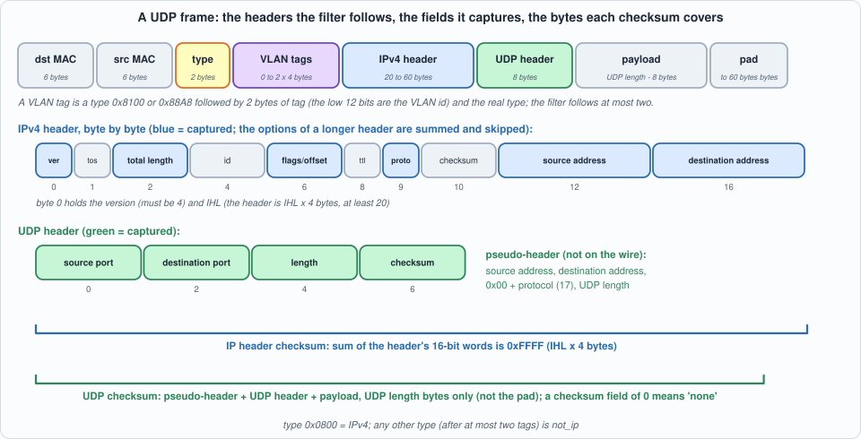
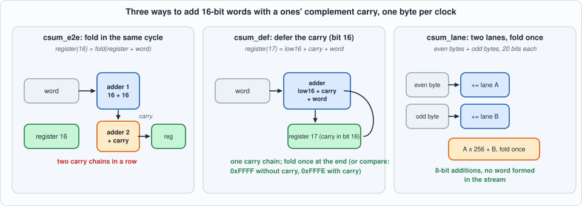
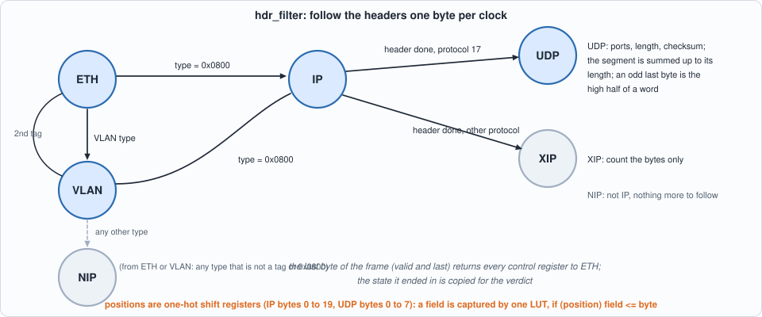
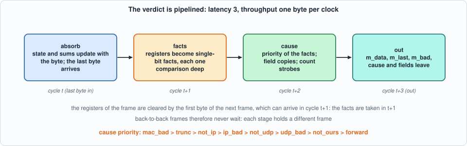
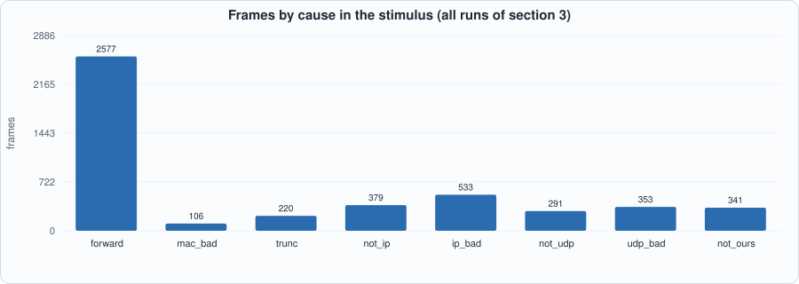
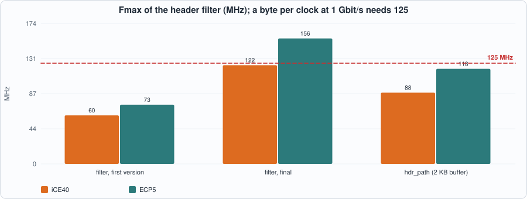
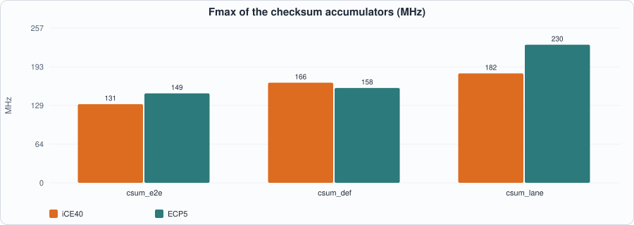

9. Headers at Line Rate: A Byte-Serial VLAN, IPv4 and UDP Filter, the Internet Checksum, and Why the First Version Ran at Half the Clock¶
About the kestrels in this picture
- Nankeen kestrel (Falco cenchroides) is found across Australia and nearby islands. It hovers over open country and grassland, and often hunts along roadsides and fields.
- American kestrel (Falco sparverius) is the smallest falcon in North America and is found from Alaska to South America. The sexes differ in plumage: males have blue-grey wings, females are barred rufous. It hunts insects and small vertebrates from perches and by hovering.
The scene is imaginary and the birds are stylised drawings.
What you will see: a hardware filter that reads a stream of Ethernet frame bytes (the output of Chapter 8's mac_rx, FCS already removed), follows the VLAN tags, the IPv4 header and the UDP header one byte per clock, checks the IPv4 header checksum and the UDP checksum, and decides for every frame whether it is a valid UDP datagram for this node, giving the reason when it is not. The chapter is also a worked example of a design that missed its clock the first time: the first version ran at 60 MHz on iCE40 and 73 MHz on ECP5, a byte per clock at 1 Gbit/s needs 125; the measurement named the paths, and five changes brought it to 122 and 156 MHz without changing a single result.
What you need to know first: Chapter 8 (the byte interface, frame_fifo) and Chapter 6 (golden models, mutation testing). You do not need to know the protocols: the chapter states the parts of RFC 791 (IPv4), RFC 768 (UDP), RFC 1071 (the checksum) and IEEE 802.1Q (VLAN) that it uses.
What this chapter builds: rtl/hdr.sv (hdr_filter, hdr_path, and two pin wrappers for the place-and-route runs), rtl/hdr_v1.sv (the first version, kept), rtl/csum.sv (three checksum accumulators), model/ip_gold.py (the specification, the frame builder and the stimulus), the testbenches tb/hdr_tb.sv, tb/hdr_path_tb.sv, tb/csum_tb.sv, and tools/ch09_run.py, tools/ch09_example_a.py, tools/ch09_example_b.py, tools/mut_ch09.py.
Width and scope
The datapath is 8 bits wide, as in Chapter 8: one byte per clock, so a field is always at a known byte position and never straddles two beats. On a 64-bit datapath a header starts in any of eight byte lanes (a VLAN tag shifts every later field by four bytes) and a 32-bit address can be split across two beats; that is a different problem, left to Exercise 2. The filter rule here is deliberately small (one destination address, one range of destination ports, one optional VLAN id); the hash filters, CAMs and multicast groups of a real filter are the next chapter's subject. Fragments are not reassembled: they are reported as not_udp.
What the filter must decide¶
A frame body arrives as bytes: 14 bytes of Ethernet header (destination and source MAC address, a 16-bit type), then, if the type is 0x8100 or 0x88A8, a VLAN tag (2 bytes of tag, whose low 12 bits are the VLAN id, then the real type; a second tag may follow), then, if the type is 0x0800, an IPv4 header of 20 to 60 bytes, then, if its protocol is 17, an 8-byte UDP header and the payload. Ethernet pads short frames with zeros to 60 bytes, so the end of the frame is not the end of the datagram: the IPv4 total length and the UDP length say where the data stops.

Figure 9.1: what the filter follows and captures (blue and green boxes), and what the two checksums cover.For every frame the filter reports one cause, by this priority (the first that applies):
| cause | meaning |
|---|---|
| 0 forward | a valid UDP datagram for this node |
| 1 mac_bad | the MAC marked the frame bad (FCS, length, rx_er) |
| 2 trunc | the frame ends inside the Ethernet, VLAN or IPv4 header |
| 3 not_ip | the type, after at most two tags, is not 0x0800 |
| 4 ip_bad | version is not 4, IHL below 5, header checksum wrong, total length shorter than the header or longer than the frame |
| 5 not_udp | protocol is not 17, or the packet is a fragment (more-fragments flag or a fragment offset; the don't-fragment flag does not count) |
| 6 udp_bad | UDP length below 8 or beyond the IP payload, or a checksum that is present and wrong |
| 7 not_ours | VLAN id, destination address or destination port does not match the configuration |
It also reports the fields it saw: the number of tags, the VLAN id, both addresses, both ports and the UDP length. A field whose bytes were never seen reads zero. The frame leaves with its last byte marked bad unless the cause is 0, so frame_fifo (Chapter 8) drops everything the node should not see, and a counter per cause says why.
The model¶
model/ip_gold.py is the specification, written from the RFCs and not from the RTL: spec() parses a frame body and returns the cause and the fields; build() makes a valid frame and breaks one thing (a flipped bit in either checksum, a wrong version, an IHL of 4, a total length too big or too small, a UDP length too small or too big, a fragment, another protocol, ARP, three tags, a cut at an interesting offset, a trailer after the datagram, a checksum field of zero meaning "none", a datagram whose checksum is zero and is sent as 0xFFFF, and others); frames() mixes them. It is checked against two known answers (RFC 1071's example sum, and a textbook IPv4 header) before anything else is trusted.
#!/usr/bin/env python3
"""Chapter 9: the specification of the header filter, written from RFC 791 (IPv4), RFC 768 (UDP), RFC 1071 (the checksum) and IEEE 802.1Q (VLAN), not from the RTL.
A frame body arrives as bytes (the MAC has already removed the FCS). The filter decides a CAUSE for each frame:
0 forward 1 mac_bad (the MAC marked it) 2 trunc (the frame ends inside the headers) 3 not_ip 4 ip_bad 5 not_udp 6 udp_bad 7 not_ours
and reports the fields it saw. `spec()` returns them; `frames()` makes the stimulus. Run it for a self-test of the model against known checksums."""
import random
FWD, MACBAD, TRUNC, NOTIP, IPBAD, NOTUDP, UDPBAD, NOTOURS = range(8)
NAMES = ["forward", "mac_bad", "trunc", "not_ip", "ip_bad", "not_udp", "udp_bad", "not_ours"]
VLAN_TYPES = (0x8100, 0x88A8)
def csum(b):
"""RFC 1071: the ones' complement sum of the 16-bit big-endian words (an odd last byte is padded with a zero byte), folded to 16 bits. NOT inverted."""
if len(b) % 2: b = b + b"\x00"
s = sum((b[i] << 8) | b[i + 1] for i in range(0, len(b), 2))
while s >> 16: s = (s & 0xFFFF) + (s >> 16)
return s
def inet_csum(b): return (~csum(b)) & 0xFFFF # the value a sender puts in the checksum field
def ip4(a, b_, c, d): return (a << 24) | (b_ << 16) | (c << 8) | d
DEFAULT_CFG = {"ip_en": 1, "ip": ip4(192, 168, 1, 10), "vid_en": 0, "vid": 100, "plo": 5000, "phi": 5999}
def spec(body, bad, cfg=DEFAULT_CFG):
"""-> dict(cause, ntags, vid, sip, dip, sport, dport, ulen). Fields are zero unless the byte that carries them was seen."""
L = len(body); r = dict(cause=FWD, ntags=0, vid=0, sip=0, dip=0, sport=0, dport=0, ulen=0)
def b(i): return body[i] if 0 <= i < L else 0
def w(i): return (b(i) << 8) | b(i + 1)
def done(c): r["cause"] = MACBAD if bad else c; return r
if L < 14: return done(TRUNC)
off = 12; typ = w(12)
while True:
if typ in VLAN_TYPES and r["ntags"] < 2:
r["ntags"] += 1
if r["ntags"] == 1: r["vid"] = ((b(off + 2) & 0xF) << 8) | b(off + 3)
if L < off + 6: return done(TRUNC)
off += 4; typ = w(off)
elif typ == 0x0800: break
else: return done(NOTIP)
ip0 = off + 2; n = L - ip0
if n < 1: return done(TRUNC)
ihl = b(ip0) & 15; hl = 4 * max(ihl, 5)
r["sip"] = (w(ip0 + 12) << 16) | w(ip0 + 14); r["dip"] = (w(ip0 + 16) << 16) | w(ip0 + 18) # captured byte by byte, so zero for bytes never seen
if n < hl: return done(TRUNC)
tot = w(ip0 + 2); frag = w(ip0 + 6); proto = b(ip0 + 9)
if proto == 17:
u0 = ip0 + hl; r["sport"] = w(u0); r["dport"] = w(u0 + 2); r["ulen"] = w(u0 + 4)
ok = (b(ip0) >> 4) == 4 and ihl >= 5 and csum(bytes(body[ip0:ip0 + hl])) == 0xFFFF and tot >= hl and tot <= n
if not ok: return done(IPBAD)
if proto != 17 or (frag & 0x3FFF): return done(NOTUDP)
u0 = ip0 + hl; ulen = r["ulen"]; ucs = w(u0 + 6)
if ulen < 8 or ulen > tot - hl: return done(UDPBAD)
if ucs != 0:
pseudo = bytes(body[ip0 + 12:ip0 + 20]) + b"\x00\x11" + ulen.to_bytes(2, "big")
if csum(pseudo + bytes(body[u0:u0 + ulen])) != 0xFFFF: return done(UDPBAD)
if cfg["vid_en"] and (r["ntags"] == 0 or r["vid"] != cfg["vid"]): return done(NOTOURS)
if cfg["ip_en"] and r["dip"] != cfg["ip"]: return done(NOTOURS)
if not (cfg["plo"] <= r["dport"] <= cfg["phi"]): return done(NOTOURS)
return done(FWD)
# ---------------------------------------------------------------- building frames
KINDS = ["good", "good_vlan", "good_qinq", "good_opts", "csum_zero", "no_csum", "odd_len", "carry_heavy", "ip_csum", "udp_csum", "ver6", "ihl4", "tot_big", "tot_small", "ulen_small", "ulen_big", "frag_mf", "frag_off", "tcp", "trailer", "arp", "three_tags", "truncated", "mac_bad", "wrong_ip", "wrong_port", "wrong_vid", "bits"]
def build(kind, rng, cfg=DEFAULT_CFG):
"""-> (body, bad_in). Starts from a valid UDP frame for the filter's configuration and breaks one thing."""
ntags = {"good_vlan": 1, "good_qinq": 2, "three_tags": 3}.get(kind, 1 if (cfg["vid_en"] and kind not in ("wrong_vid",) and rng.random() < 0.8) else rng.choice([0, 0, 0, 1]))
vid = cfg["vid"] if (kind != "wrong_vid") else (cfg["vid"] + 1 + rng.randrange(50)) & 0xFFF
if kind == "wrong_vid" and cfg["vid_en"] and rng.random() < 0.3: ntags = 0
ihl = 5 + (rng.randint(1, 5) if kind == "good_opts" else rng.choice([0, 0, 0, 1]))
plen = rng.choice([0, 1, 2, 7, 18, 19, 22, 100, rng.randint(0, 200)])
if kind == "odd_len": plen = rng.choice([1, 3, 17, 101, 199])
if kind in ("carry_heavy", "csum_zero"): plen = rng.choice([16, 32, 33, 64])
if kind == "carry_heavy": payload = bytes(rng.choice([0xFF, 0xFF, 0xFF, 0x00, rng.getrandbits(8)]) for _ in range(plen))
else: payload = bytes(rng.getrandbits(8) for _ in range(plen))
dip = cfg["ip"] if (cfg["ip_en"] and kind != "wrong_ip") else rng.choice([cfg["ip"], rng.getrandbits(32)])
if kind == "wrong_ip" and dip == cfg["ip"]: dip ^= 0x100
if kind == "wrong_port": dport = (cfg["phi"] + 1 + rng.randrange(40)) & 0xFFFF if rng.random() < 0.5 else (cfg["plo"] - 1 - rng.randrange(40)) & 0xFFFF
else: dport = rng.choice([cfg["plo"], cfg["phi"], rng.randint(cfg["plo"], cfg["phi"])])
if kind == "wrong_port" and cfg["plo"] <= dport <= cfg["phi"]: dport = (cfg["phi"] + 1) & 0xFFFF
sip = rng.getrandbits(32); sport = rng.getrandbits(16)
ulen = 8 + len(payload)
def udp(ulen_field=None, force_csum=None):
ul = ulen if ulen_field is None else ulen_field
hdr = sport.to_bytes(2, "big") + dport.to_bytes(2, "big") + ul.to_bytes(2, "big") + b"\x00\x00"
pseudo = sip.to_bytes(4, "big") + dip.to_bytes(4, "big") + b"\x00\x11" + ul.to_bytes(2, "big")
c = inet_csum(pseudo + hdr + payload)
if kind == "csum_zero":
# make the sum of everything but the last payload word equal to what turns the checksum into zero: the sender then transmits 0xFFFF
body_ = bytearray(payload); wd = len(body_) // 2 * 2 - 2; body_[wd:wd + 2] = b"\x00\x00"
s = csum(pseudo + hdr + bytes(body_)); want = (0xFFFF - s) & 0xFFFF if s != 0xFFFF else 0xFFFF
body_[wd:wd + 2] = want.to_bytes(2, "big"); payload_ = bytes(body_); c = inet_csum(pseudo + hdr + payload_); return hdr[:6] + (0xFFFF if c == 0 else c).to_bytes(2, "big") + payload_
if c == 0: c = 0xFFFF
if kind == "no_csum" or (kind == "ulen_small" and rng.random() < 0.5): c = 0 # (a too-short length must be refused even when there is no checksum to refuse it)
if kind == "udp_csum": c ^= 1 << rng.randrange(16)
if force_csum is not None: c = force_csum
return hdr[:6] + c.to_bytes(2, "big") + payload
if kind == "ulen_small": ulen_f = rng.choice([0, 1, 7, rng.randint(0, 7)])
elif kind == "ulen_big": ulen_f = ulen + rng.choice([1, 2, 9, 400])
else: ulen_f = None
seg = udp(ulen_f)
proto = rng.choice([6, 1, 2, 47, 0, 16, 18, 255, 6]) if kind == "tcp" else 17
if kind == "trailer": seg = seg + bytes(rng.getrandbits(8) for _ in range(rng.randint(1, 20))) # bytes after the UDP datagram, inside the IP packet: not part of the checksum
tot = ihl * 4 + len(seg)
if kind == "tot_big": tot += rng.choice([1, 2, 100, 1000]) + max(0, 60 - 14 - tot) # always past the end of even a padded frame
if kind == "tot_small": tot = rng.choice([ihl * 4 - 1, ihl * 4 - 4, ihl * 4, 0, 20 if ihl > 5 else 19, ihl * 4 + 7 if len(seg) >= 8 else 0])
frag = 0x4000 if rng.random() < 0.3 else 0
if kind == "frag_mf": frag |= 0x2000
if kind == "frag_off": frag |= rng.randint(1, 0x1FFF)
ver = rng.choice([5, 3, 6, 7, 0, 12, 15, 5]) if kind == "ver6" else 4 # versions other than 4, the near misses first
ih = 4 if kind == "ihl4" else ihl
opts = bytes(rng.getrandbits(8) for _ in range((ihl - 5) * 4))
ip = bytes([(ver << 4) | ih, rng.getrandbits(8)]) + tot.to_bytes(2, "big") + rng.getrandbits(16).to_bytes(2, "big") + frag.to_bytes(2, "big") + bytes([rng.randint(1, 255), proto, 0, 0]) + sip.to_bytes(4, "big") + dip.to_bytes(4, "big") + opts
hl = 4 * max(ihl, 5) if kind != "ihl4" else 20
c = inet_csum(ip[:hl]) if True else 0
if kind == "ip_csum": c ^= 1 << rng.randrange(16)
ip = ip[:10] + c.to_bytes(2, "big") + ip[12:]
pkt = ip + seg
dst = bytes(rng.getrandbits(8) for _ in range(6)); src = bytes(rng.getrandbits(8) for _ in range(6))
eth = dst + src
for t in range(ntags): eth += (0x8100 if (t == 0 or rng.random() < 0.5) else 0x88A8).to_bytes(2, "big") + ((rng.getrandbits(3) << 13) | (vid if t == 0 else rng.getrandbits(12))).to_bytes(2, "big")
if kind == "arp": body = eth + (0x0806).to_bytes(2, "big") + bytes(rng.getrandbits(8) for _ in range(28))
else: body = eth + (0x0800).to_bytes(2, "big") + pkt
if kind == "bits": body = bytes(rng.getrandbits(8) for _ in range(rng.randint(1, 120)))
bad = 0
if kind == "mac_bad": bad = 1
if kind == "truncated": body = body[:rng.randint(1, len(body) - 1)] if len(body) > 1 else body
elif len(body) < 60: body = body + bytes(60 - len(body))
if kind == "truncated" and rng.random() < 0.5:
body = body[:rng.choice([12, 13, 14, 15, 16, 17, 18, 20, 33, 34, 35, 36, 37, 41, 42, 43, 49])] # cuts at the interesting offsets
return body, bad
def frames(seed, n, cfg=DEFAULT_CFG, weights=None):
"""n frames of mixed kinds; `weights` is a dict kind -> weight (default: about 1/3 good, the rest each fault)."""
rng = random.Random(seed); w = weights or {k: (6 if k.startswith("good") or k in ("no_csum", "odd_len") else 2) for k in KINDS}
ks = list(w); ws = [w[k] for k in ks]; out = []
for _ in range(n):
k = rng.choices(ks, ws)[0]; body, bad = build(k, rng, cfg); out.append((k, body, bad))
return out
def write_stimulus(path, fr, seed=1, gap=(0, 0), bubble=0):
"""One line per cycle: valid last bad data (5 hex digits). `gap` = idle cycles between frames (min, max); `bubble` = percent chance of an idle cycle before each byte inside a frame. Idle cycles carry random junk on data, last and bad: a don't-care must be ignored."""
rng = random.Random(seed ^ 0x9E37); lines = []
def idle(): lines.append("%x%x%x%02x" % (0, rng.getrandbits(1), rng.getrandbits(1), rng.getrandbits(8)))
for k, body, bad in fr:
for _ in range(rng.randint(*gap)): idle()
for i, x in enumerate(body):
while bubble and rng.randrange(100) < bubble: idle()
last = i == len(body) - 1
lines.append("%x%x%x%02x" % (1, int(last), bad if last else 0, x))
with open(path, "w") as f: f.write("\n".join(lines) + "\n")
return len(lines)
def csum_messages(seed, n=300):
"""Messages for the checksum accumulators: the edge cases first (all 0xFF, alternating, zero, the RFC 1071 example, one byte, odd lengths), then random ones heavy in 0xFF so that carries occur on almost every word."""
rng = random.Random(seed); m = [bytes.fromhex("0001f203f4f5f6f7"), b"\xff", b"\x00", b"\xff\xff", b"\xff\xff\xff", b"\x01"]
m += [b"\xff" * k for k in range(1, 41)] + [b"\x00" * k for k in (2, 3, 9)] + [b"\xff\x00" * k for k in (1, 2, 17)] + [b"\x80\x00" * k for k in (2, 3)]
while len(m) < n:
k = rng.choice([rng.randint(1, 12), rng.randint(1, 100), rng.randint(1, 1600)]); style = rng.randrange(3)
m.append(bytes(rng.getrandbits(8) if style == 0 else rng.choice([0xFF, 0xFF, 0xFF, 0xFE, 0x00, rng.getrandbits(8)]) for _ in range(k)))
return m
def write_csum_stimulus(path, msgs, seed=1, idle=15):
rng = random.Random(seed ^ 0x51); lines = []
for m in msgs:
for i, x in enumerate(m):
while rng.randrange(100) < idle: lines.append("%x%x%x%02x" % (0, rng.getrandbits(1), rng.getrandbits(1), rng.getrandbits(8)))
lines.append("%x%x%x%02x" % (1, int(i == len(m) - 1), int(i == 0), x))
with open(path, "w") as f: f.write("\n".join(lines) + "\n")
return len(lines)
def parse_results(text):
"""The testbench prints `FRAME <hex> <bad>` then `RES cause ntags vid sip dip sport dport ulen` per frame."""
fr = []; res = []
for line in text.splitlines():
p = line.split()
if line.startswith("FRAME "):
try: fr.append((bytes.fromhex(p[1]), int(p[2])))
except ValueError: fr.append((b"<x>", 9))
elif line.startswith("RES "):
try: res.append(tuple(int(x) for x in p[1:]))
except ValueError: res.append(("x",))
return fr, res
def expected(fr, cfg=DEFAULT_CFG):
out_f = []; out_r = []
for k, body, bad in fr:
s = spec(body, bad, cfg); out_f.append((body, 1 if s["cause"] else 0)); out_r.append((s["cause"], s["ntags"], s["vid"], s["sip"], s["dip"], s["sport"], s["dport"], s["ulen"]))
return out_f, out_r
if __name__ == "__main__":
# RFC 1071 example: 00 01 f2 03 f4 f5 f6 f7 sums to ddf2
assert csum(bytes.fromhex("0001f203f4f5f6f7")) == 0xDDF2
# a textbook IPv4 header (Wikipedia): checksum field 0xB861 over 4500 0073 0000 4000 4011 .... c0a8 0001 c0a8 00c7
h = bytes.fromhex("450000730000400040110000c0a80001c0a800c7"); assert inet_csum(h) == 0xB861, hex(inet_csum(h))
assert csum(h[:10] + b"\xb8\x61" + h[12:]) == 0xFFFF
from collections import Counter
c = Counter(); n_ok = 0
for seed in range(40):
for k, body, bad in frames(seed, 60):
s = spec(body, bad); c[(k, NAMES[s["cause"]])] += 1
want = {"good": "forward", "trailer": "forward", "ip_csum": "ip_bad", "udp_csum": "udp_bad", "ver6": "ip_bad", "ihl4": "ip_bad", "tot_big": "ip_bad", "frag_mf": "not_udp", "frag_off": "not_udp", "tcp": "not_udp", "arp": "not_ip", "mac_bad": "mac_bad", "no_csum": "forward", "csum_zero": "forward", "ulen_small": "udp_bad", "ulen_big": "udp_bad", "three_tags": "not_ip", "odd_len": "forward", "carry_heavy": "forward", "good_opts": "forward"}
cfgd = DEFAULT_CFG; bad = []
for (k, cause), v in sorted(c.items()):
if k in want and cause != want[k] and not (k in ("good", "trailer", "good_opts", "odd_len", "carry_heavy", "no_csum", "csum_zero") and cause == "not_ours"): bad.append((k, cause, v))
print("model self-test: known checksums OK;", "construction and specification agree" if not bad else f"DISAGREE: {bad}")
for k in ("good", "good_vlan", "good_qinq", "good_opts", "csum_zero", "no_csum", "odd_len", "carry_heavy", "tot_small", "truncated", "wrong_ip", "wrong_port", "wrong_vid", "bits"):
print(f" {k:12s} " + ", ".join(f"{cause} {v}" for (kk, cause), v in sorted(c.items()) if kk == k))
The Internet checksum¶
RFC 1071 defines the checksum used by IPv4, UDP and TCP: add the data as 16-bit big-endian words in ones' complement (a carry out of bit 15 is added back at bit 0), pad an odd last byte with a zero byte, and send the complement of the result. Three facts make it cheap in hardware and are used below.
- A received message is correct when its words, checksum field included, sum to
0xFFFF. There is no need to compute the complement. - The order does not matter. The sum is commutative and associative, so words may be added in any order, and the two bytes of a word can be added separately (the byte-lane variant below).
- The end-around carry may be deferred. Keep the carry as bit 16 of the register and add it at the next addition: the register holds
low + 65536 x carry, which is the same value modulo0xFFFF. A sum is then correct exactly whenlow = 0xFFFFwith no carry, orlow = 0xFFFEwith a carry (their fold is0xFFFF): two 16-bit comparisons, no adder.
UDP's checksum covers more than the UDP segment: also a pseudo-header that is not on the wire, the source address, the destination address, a zero byte and the protocol (17), and the UDP length. That ties the datagram to the addresses it was sent between. A checksum field of 0 means "no checksum" (a sender whose sum comes out as zero sends 0xFFFF).

Figure 9.2: three ways to accumulate, compared in Example B.The first version, and what its measurement found¶
The first hdr_filter (rtl/hdr_v1.sv) was written the obvious way: a state machine with a byte counter per header, a case on the counter to capture each field, a 12-bit counter and a comparison with the UDP length to find the end of the segment, a multiplexer in front of every register that substitutes the initial value at the start of a frame, and the whole verdict as one expression of the registers in the cycle after the last byte. It passed every test (section 3 of the recorded run runs it against the same specification). Its clock did not:
Example A below measures it (the first row of its table). iCE40 reaches 60.2 MHz and ECP5 73.4, against 125 needed for a byte per clock at 1 Gbit/s, and the critical path starts at fresh (the flag that substitutes initial values) and ends at uacc (the UDP accumulator): 7.8 ns of logic and 8.8 ns of routing on iCE40. The logic on that path is the multiplexer in front of the register, the position decode, the end-of-segment comparison with the length, the selection of what to add, and the 17-bit adder. Each step is reasonable; their sum is half the clock.
Five changes, none of which alters a result. (I measured after each one while developing; only the first and the last version are kept and recorded, so the contribution of each change is not reported.)
- One-hot position registers. The position inside the IPv4 header (bytes 0 to 19) and the UDP header (bytes 0 to 7) is a shift register with one bit set. A field is captured by
if (position bit) field <= byte: one LUT, with no decoder and no counter in front. - Flags computed a byte ahead. The end of the IP header (
hlast), the low byte of an EtherType (tpos), the address-word and UDP select signals, and the end of the UDP segment (uend) are registers, set in the cycle before they are needed. The end of the segment comes from a down counter loaded when the length is known (left), not from comparing a counter with the length every byte. - Clear by the flip-flop, not by a multiplexer. FPGA flip-flops have a synchronous reset that costs no LUT. The control registers (state, positions, flags) are reset by the last byte of the frame; the data fields and accumulators by the first byte of the next one (which is an Ethernet byte and captures none of them). A copy of the final state (
st_v,ntags_v) is kept for the verdict. This removes thefreshmultiplexer from every path. - Pipeline the verdict. The cycle after the last byte only turns the registers into single-bit facts, each at most one 16-bit comparison deep (
tot <= ipc,ulen > trem, a checksum compare, ...); the next cycle combines the facts into the cause by priority, and the count strobes are registered one-hot so the counters see no decoder.trem = total length - header lengthis computed as the total-length byte arrives, and the header length is worked out once, at byte 0. The price is one more cycle of latency (3, measured), and the throughput is unchanged: the registers of one frame are cleared by the first byte of the next, which may arrive in the very next cycle, so the facts are taken in exactly that cycle. - The addend is a pre-selected AND-OR. The UDP accumulator takes one of four words (an address word of the IP header, the UDP length, a pair of segment bytes, an odd last byte alone). The selects are flip-flop outputs computed a byte earlier, and the initial value of the accumulator is the pseudo-header's
0x0011, so no add is spent on it.

Figure 9.3: ETH, VLAN, IP, UDP, XIP (the payload of another protocol) and NIP (not IP).
Figure 9.4: absorb the byte, take the facts, choose the cause, deliver: latency 3, a byte per clock.The final filter¶
// verilator lint_off DECLFILENAME
// verilator lint_off UNUSEDSIGNAL
// Chapter 9: headers at line rate. Needs rtl/crc32_stream.sv and rtl/mac.sv only for hdr_path (mac_rx, frame_fifo).
//
// hdr_filter: a stream of frame bytes (valid, data, last, bad: the output of mac_rx, FCS already removed; no ready, bytes may arrive on any cycle) -> the same bytes three cycles later with the frame's verdict:
// m_bad = 1 on the last byte unless the frame is a valid IPv4/UDP frame for this node (so frame_fifo drops everything else), and the CAUSE with the fields that were seen.
// One byte per clock, whatever the header length. This is the SECOND version (rtl/hdr_v1.sv is the first; the chapter shows what its measurement found): positions inside the headers are ONE-HOT shift registers (a field is captured by `if (position bit) field <= byte`, one LUT), the end of the IP header and of the UDP segment are registered flags computed a cycle ahead, and the state of the frame is cleared by the flip-flops' synchronous reset (at the last byte for the control state, at the first byte for the data fields) instead of by a multiplexer in front of them.
// The verdict is pipelined in two stages (below). The checksum accumulators keep a DEFERRED carry in bit 16 (the end-around carry of the ones' complement sum is added in the NEXT addition, so the adder never chains two carries); a sum is correct when low = 0xFFFF with no carry or low = 0xFFFE with one (their fold is 0xFFFF).
// cause: 0 forward 1 mac_bad 2 trunc (the frame ends inside the headers) 3 not_ip (type is not 0x0800 after at most two VLAN tags) 4 ip_bad (version, IHL, header checksum, total length) 5 not_udp (protocol is not 17, or a fragment) 6 udp_bad (length, checksum) 7 not_ours (VLAN id, destination address or destination port)
module hdr_filter (
input logic clk, input logic rst,
input logic s_valid, input logic [7:0] s_data, input logic s_last, input logic s_bad,
input logic cfg_ip_en, input logic [31:0] cfg_ip, input logic cfg_vid_en, input logic [11:0] cfg_vid, input logic [15:0] cfg_plo, input logic [15:0] cfg_phi,
output logic m_valid, output logic [7:0] m_data, output logic m_last, output logic m_bad,
output logic [2:0] m_cause, output logic [1:0] m_ntags, output logic [11:0] m_vid, output logic [31:0] m_sip, output logic [31:0] m_dip,
output logic [15:0] m_sport, output logic [15:0] m_dport, output logic [15:0] m_ulen, output logic [127:0] cnt);
localparam logic [2:0] S_ETH = 3'd0, S_VLAN = 3'd1, S_IP = 3'd2, S_UDP = 3'd3, S_XIP = 3'd4, S_NIP = 3'd5;
// --- control state: back to its initial value by the reset of the flip-flops at the last byte of a frame; (st_v, ntags_v) keep the final values for the verdict
logic [2:0] st, st_n, st_v; logic [3:0] pos, pos_n; logic [1:0] ntags, ntags_n, ntags_v; logic [19:0] ipo, ipo_n; logic ipar, ipar_n, hlast, hlast_n; logic [7:0] uo, uo_n; logic upar, upar_n, uact, uact_n, uend, uend_n, uin, uin_n;
logic [15:0] left, left_n; logic ipw, ipw_n, tpos, tpos_n, sp, sp_n, sl, sl_n, su, su_n; logic h08, h81, h88, h08_n, h81_n, h88_n;
// --- data fields: cleared by the reset of their flip-flops at the FIRST byte of a frame (which is an Ethernet byte and captures none of them)
logic fresh; logic [11:0] vid, vid_n; logic [7:0] vi, vi_n, proto, proto_n, ih, ih_n, uh, uh_n; logic [15:0] tot, tot_n, frag, frag_n, sport, sport_n, dport, dport_n, ulen, ulen_n, ucs, ucs_n;
logic [31:0] sip, sip_n, dip, dip_n; logic [11:0] ipc, ipc_n; logic [16:0] ipacc, ipacc_n, uacc, uacc_n;
logic [15:0] addend; logic do_add, a_ip, a_ul, a_pair, a_lone; logic [3:0] ihm, ihm_n; logic [5:0] hl, hl_n; logic [15:0] trem, trem_n; logic tge, tge_n;
function automatic logic [16:0] addw(input logic [16:0] a, input logic [15:0] w); // ones' complement add with the end-around carry DEFERRED into bit 16
addw = {1'b0, a[15:0]} + {16'd0, a[16]} + {1'b0, w};
endfunction
logic lo00, loA8, d_ip, d_vl, typ_now;
assign lo00 = (s_data == 8'h00); assign loA8 = (s_data == 8'hA8);
assign d_ip = h08 && lo00; assign d_vl = (h81 && lo00) || (h88 && loA8);
assign typ_now = tpos; // this byte is the low byte of an EtherType (a flag computed a byte ahead)
always_comb begin
st_n = st; pos_n = pos; ntags_n = ntags; ipo_n = ipo; ipar_n = ipar; hlast_n = hlast; ipw_n = ipw; tpos_n = tpos; sp_n = sp; sl_n = sl; su_n = su; uo_n = uo; upar_n = upar; uact_n = uact; uend_n = uend; uin_n = uin; left_n = left;
h08_n = h08; h81_n = h81; h88_n = h88; vid_n = vid; vi_n = vi; proto_n = proto; ih_n = ih; uh_n = uh; tot_n = tot; frag_n = frag; sport_n = sport; dport_n = dport; ulen_n = ulen; ucs_n = ucs;
sip_n = sip; dip_n = dip; hl_n = hl; ihm_n = ihm; trem_n = trem; tge_n = tge; ipc_n = ipc; ipacc_n = ipacc; uacc_n = uacc; addend = 16'd0; do_add = 1'b0;
case (st)
S_ETH, S_VLAN: begin
pos_n = pos + 4'd1; tpos_n = (st == S_ETH && pos == 4'd12) || (st == S_VLAN && pos == 4'd2);
if ((st == S_ETH && pos == 4'd12) || (st == S_VLAN && pos == 4'd2)) begin h08_n = (s_data == 8'h08); h81_n = (s_data == 8'h81); h88_n = (s_data == 8'h88); end
if (st == S_VLAN && ntags == 2'd1 && pos == 4'd0) vid_n[11:8] = s_data[3:0];
if (st == S_VLAN && ntags == 2'd1 && pos == 4'd1) vid_n[7:0] = s_data;
if (typ_now) begin
pos_n = 4'd0; tpos_n = 1'b0;
if (d_vl && ntags < 2'd2) begin st_n = S_VLAN; ntags_n = ntags + 2'd1; end
else if (d_ip) begin st_n = S_IP; ipo_n = 20'd1; end
else st_n = S_NIP;
end
end
S_IP: begin
if (!ipc[11]) ipc_n = ipc + 12'd1;
ipo_n = {ipo[18:0], 1'b0}; ipar_n = ~ipar;
if (ipo[0]) begin vi_n = s_data; hl_n = {(s_data[3:0] < 4'd5) ? 4'd5 : s_data[3:0], 2'b00}; ihm_n = (s_data[3:0] < 4'd5) ? 4'd4 : s_data[3:0] - 4'd1; end // header length in bytes, and IHL - 1, worked out once
if (ipo[2]) tot_n[15:8] = s_data;
if (ipo[3]) begin tot_n[7:0] = s_data; trem_n = {tot[15:8], s_data} - {10'd0, hl}; tge_n = ({tot[15:8], s_data} >= {10'd0, hl}); end // total length minus header length, and whether it is non-negative, computed as the byte arrives
if (ipo[6]) frag_n[15:8] = s_data; if (ipo[7]) frag_n[7:0] = s_data;
if (ipo[9]) proto_n = s_data;
if (ipo[12]) sip_n[31:24] = s_data; if (ipo[13]) sip_n[23:16] = s_data; if (ipo[14]) sip_n[15:8] = s_data; if (ipo[15]) sip_n[7:0] = s_data;
if (ipo[16]) dip_n[31:24] = s_data; if (ipo[17]) dip_n[23:16] = s_data; if (ipo[18]) dip_n[15:8] = s_data; if (ipo[19]) dip_n[7:0] = s_data;
ipw_n = ipo[12] || ipo[14] || ipo[16] || ipo[18]; // the NEXT byte completes an address word
if (!ipar) ih_n = s_data;
else ipacc_n = addw(ipacc, {ih, s_data});
hlast_n = (ipc[5:0] == {ihm, 2'b10}); // the NEXT byte is the last of the header
if (hlast) begin
if (proto == 8'd17) begin st_n = S_UDP; uo_n = 8'd1; end else st_n = S_XIP;
end
end
S_UDP: begin
if (!ipc[11]) ipc_n = ipc + 12'd1;
uo_n = {uo[6:0], 1'b0}; upar_n = ~upar;
if (uo[0]) sport_n[15:8] = s_data; if (uo[1]) sport_n[7:0] = s_data; if (uo[2]) dport_n[15:8] = s_data; if (uo[3]) dport_n[7:0] = s_data;
if (uo[4]) ulen_n[15:8] = s_data; if (uo[5]) ulen_n[7:0] = s_data; if (uo[6]) ucs_n[15:8] = s_data; if (uo[7]) ucs_n[7:0] = s_data;
if (uo[5]) begin left_n = {ulen[15:8], s_data} - 16'd6; uact_n = 1'b1; end // bytes left in the segment, counted from byte 6 (a length of 7 or less is refused by the verdict, so no segment ends before byte 7)
else if (uact) begin left_n = left - 16'd1; uend_n = (left == 16'd2); end
if (uend) uin_n = 1'b0;
end
S_XIP: if (!ipc[11]) ipc_n = ipc + 12'd1;
default: ;
endcase
// the UDP accumulator takes one of four words: an address word of the IP header (they belong to the pseudo-header), the UDP length (pseudo-header), a pair of segment bytes, or an odd last byte alone. The selects are flip-flop outputs, so the choice is an AND-OR of two LUT levels in front of the adder.
sp_n = upar_n && uin_n; sl_n = !upar_n && uend_n && uin_n; su_n = uo_n[6] && uin_n; // the selects, registered a byte ahead
a_ip = ipw; a_ul = su; a_pair = sp; a_lone = sl;
addend = ({16{a_ip}} & {ih, s_data}) | ({16{a_ul}} & ulen) | ({16{a_pair}} & {uh, s_data}) | ({16{a_lone}} & {s_data, 8'h00}); do_add = a_ip || a_ul || a_pair || a_lone;
if (st == S_UDP && uin && !upar && !uend) uh_n = s_data;
if (do_add) uacc_n = addw(uacc, addend);
end
always_ff @(posedge clk) begin
if (rst) fresh <= 1'b1;
else if (s_valid) fresh <= s_last;
// control state
if (rst || (s_valid && s_last)) begin st <= S_ETH; pos <= 4'd0; ntags <= 2'd0; ipo <= 20'd0; ipar <= 1'b0; hlast <= 1'b0; ipw <= 1'b0; tpos <= 1'b0; sp <= 1'b0; sl <= 1'b0; su <= 1'b0; uo <= 8'd0; upar <= 1'b0; uact <= 1'b0; uend <= 1'b0; uin <= 1'b1; left <= 16'd0; end
else if (s_valid) begin st <= st_n; pos <= pos_n; ntags <= ntags_n; ipo <= ipo_n; ipar <= ipar_n; hlast <= hlast_n; ipw <= ipw_n; tpos <= tpos_n; sp <= sp_n; sl <= sl_n; su <= su_n; uo <= uo_n; upar <= upar_n; uact <= uact_n; uend <= uend_n; uin <= uin_n; left <= left_n; end
if (s_valid) begin h08 <= h08_n; h81 <= h81_n; h88 <= h88_n; end
if (s_valid && s_last) begin st_v <= st_n; ntags_v <= ntags_n; end
// data fields
if (rst || (s_valid && fresh)) begin vid <= '0; vi <= '0; proto <= '0; ih <= '0; uh <= '0; tot <= '0; frag <= '0; sport <= '0; dport <= '0; ulen <= '0; ucs <= '0; sip <= '0; dip <= '0; hl <= '0; ihm <= '0; trem <= '0; tge <= 1'b0; ipc <= '0; ipacc <= '0; uacc <= 17'h00011; end // the pseudo-header's zero byte and protocol are the initial value of the UDP accumulator
else if (s_valid) begin vid <= vid_n; vi <= vi_n; proto <= proto_n; ih <= ih_n; uh <= uh_n; tot <= tot_n; frag <= frag_n; sport <= sport_n; dport <= dport_n; ulen <= ulen_n; ucs <= ucs_n; sip <= sip_n; dip <= dip_n; hl <= hl_n; ihm <= ihm_n; trem <= trem_n; tge <= tge_n; ipc <= ipc_n; ipacc <= ipacc_n; uacc <= uacc_n; end
end
// --- the verdict in two registered stages. Stage 1 (the cycle after the last byte) turns the registers into single-bit facts, each at most one 16-bit comparison deep; stage 2 combines them into the cause.
logic ip_sum_ok, u_sum_ok; logic o1_v, o1_l, o1_b; logic [7:0] o1_d; logic o2_v, o2_l; logic [7:0] o2_d;
logic f_macbad, f_trunc, f_notip, f_ipok_a, f_tge, f_tle, f_notudp, f_ul8, f_ulgt, f_ucsbad, f_vidbad, f_ipbad, f_portbad; logic [1:0] v_ntags; logic [11:0] v_vid; logic [31:0] v_sip, v_dip; logic [15:0] v_sport, v_dport, v_ulen;
assign ip_sum_ok = ipacc[16] ? (ipacc[15:0] == 16'hFFFE) : (ipacc[15:0] == 16'hFFFF);
assign u_sum_ok = uacc[16] ? (uacc[15:0] == 16'hFFFE) : (uacc[15:0] == 16'hFFFF);
logic [2:0] cause_n;
always_comb begin
if (f_macbad) cause_n = 3'd1;
else if (f_trunc) cause_n = 3'd2;
else if (f_notip) cause_n = 3'd3;
else if (!f_ipok_a || !f_tge || !f_tle) cause_n = 3'd4;
else if (f_notudp) cause_n = 3'd5;
else if (f_ul8 || f_ulgt || f_ucsbad) cause_n = 3'd6;
else if (f_vidbad || f_ipbad || f_portbad) cause_n = 3'd7;
else cause_n = 3'd0;
end
logic [15:0] cn [0:7]; logic [7:0] inc;
always_ff @(posedge clk) begin
o1_v <= s_valid && !rst; o1_d <= s_data; o1_l <= s_last; o1_b <= s_bad;
o2_v <= o1_v && !rst; o2_d <= o1_d; o2_l <= o1_v && o1_l;
if (o1_v && o1_l) begin
f_macbad <= o1_b; f_trunc <= (st_v == S_ETH || st_v == S_VLAN || st_v == S_IP); f_notip <= (st_v == S_NIP);
f_ipok_a <= (vi[7:4] == 4'd4) && (vi[3:0] >= 4'd5) && ip_sum_ok; f_tge <= tge; f_tle <= (tot <= {4'd0, ipc});
f_notudp <= (st_v != S_UDP) || (frag[13:0] != 14'd0); f_ul8 <= (ulen < 16'd8); f_ulgt <= (ulen > trem); f_ucsbad <= (ucs != 16'd0) && !u_sum_ok;
f_vidbad <= cfg_vid_en && (ntags_v == 2'd0 || vid != cfg_vid); f_ipbad <= cfg_ip_en && (dip != cfg_ip); f_portbad <= (dport < cfg_plo) || (dport > cfg_phi);
v_ntags <= ntags_v; v_vid <= vid; v_sip <= sip; v_dip <= dip; v_sport <= sport; v_dport <= dport; v_ulen <= ulen;
end
m_valid <= o2_v && !rst; m_data <= o2_d; m_last <= o2_v && o2_l;
if (o2_v && o2_l) begin m_cause <= cause_n; m_ntags <= v_ntags; m_vid <= v_vid; m_sip <= v_sip; m_dip <= v_dip; m_sport <= v_sport; m_dport <= v_dport; m_ulen <= v_ulen; end
for (int i = 0; i < 8; i++) inc[i] <= !rst && o2_v && o2_l && (cause_n == 3'(i)); // one-hot count strobes, registered together with m_cause: the counters see no decoder
if (rst) for (int i = 0; i < 8; i++) cn[i] <= 16'd0;
else for (int i = 0; i < 8; i++) if (inc[i]) cn[i] <= cn[i] + 16'd1;
end
assign m_bad = m_last && (m_cause != 3'd0);
assign cnt = {cn[7], cn[6], cn[5], cn[4], cn[3], cn[2], cn[1], cn[0]};
endmodule
// hdr_path: the receive side of a UDP node in one clock domain: PHY bytes -> mac_rx -> hdr_filter -> frame_fifo. Only valid UDP frames for this node are committed; everything else is rolled back by the frame buffer. `cnt` = frames per cause.
module hdr_path #(parameter int AW = 11) (
input logic clk, input logic rst, input logic rx_dv, input logic rx_er, input logic [7:0] rxd,
input logic cfg_ip_en, input logic [31:0] cfg_ip, input logic cfg_vid_en, input logic [11:0] cfg_vid, input logic [15:0] cfg_plo, input logic [15:0] cfg_phi,
output logic o_valid, output logic [7:0] o_data, output logic o_last, input logic o_ready,
output logic [15:0] n_ok, output logic [15:0] n_bad, output logic [15:0] n_ovf, output logic [127:0] cnt);
logic a_v, a_l, a_b, b_v, b_l, b_bad, rdy; logic [7:0] a_d, b_d; logic [2:0] cause; logic [1:0] nt; logic [11:0] vd; logic [31:0] si, di; logic [15:0] sp, dp, ul;
mac_rx mrx (.clk(clk), .rst(rst), .rx_dv(rx_dv), .rx_er(rx_er), .rxd(rxd), .m_valid(a_v), .m_data(a_d), .m_last(a_l), .m_bad(a_b));
hdr_filter hf (.clk(clk), .rst(rst), .s_valid(a_v), .s_data(a_d), .s_last(a_l), .s_bad(a_b), .cfg_ip_en(cfg_ip_en), .cfg_ip(cfg_ip), .cfg_vid_en(cfg_vid_en), .cfg_vid(cfg_vid), .cfg_plo(cfg_plo), .cfg_phi(cfg_phi),
.m_valid(b_v), .m_data(b_d), .m_last(b_l), .m_bad(b_bad), .m_cause(cause), .m_ntags(nt), .m_vid(vd), .m_sip(si), .m_dip(di), .m_sport(sp), .m_dport(dp), .m_ulen(ul), .cnt(cnt));
frame_fifo #(.AW(AW)) ff (.clk(clk), .rst(rst), .in_valid(b_v), .in_data(b_d), .in_last(b_l), .in_bad(b_bad), .in_ready(rdy), .out_valid(o_valid), .out_data(o_data), .out_last(o_last), .out_ready(o_ready), .n_ok(n_ok), .n_bad(n_bad), .n_ovf(n_ovf));
endmodule
// hdr_filter_syn and hdr_path_syn: the same designs behind a handful of pins, ONLY so that they fit a chip's pins for the place-and-route measurements (the iCE40 HX8K has 256, the ECP5-25F 197; hdr_filter alone has 359). The 78 configuration bits are shifted in serially (cfg_sh, cfg_si) and the metadata and counters leave 16 bits at a time, chosen by `sel`. The wrappers' own cost (78 flip-flops and a 16-bit multiplexer) is part of the numbers measured with them.
module hdr_filter_syn (
input logic clk, input logic rst, input logic s_valid, input logic [7:0] s_data, input logic s_last, input logic s_bad, input logic cfg_si, input logic cfg_sh, input logic [3:0] sel,
output logic m_valid, output logic [7:0] m_data, output logic m_last, output logic m_bad, output logic [2:0] m_cause, output logic [15:0] info);
logic [77:0] cfg; logic [1:0] nt; logic [11:0] vd; logic [31:0] si, di; logic [15:0] sp, dp, ul; logic [127:0] cnt; logic [255:0] all_bits;
always_ff @(posedge clk) if (cfg_sh) cfg <= {cfg[76:0], cfg_si};
hdr_filter hf (.clk(clk), .rst(rst), .s_valid(s_valid), .s_data(s_data), .s_last(s_last), .s_bad(s_bad), .cfg_ip_en(cfg[0]), .cfg_ip(cfg[32:1]), .cfg_vid_en(cfg[33]), .cfg_vid(cfg[45:34]), .cfg_plo(cfg[61:46]), .cfg_phi(cfg[77:62]),
.m_valid(m_valid), .m_data(m_data), .m_last(m_last), .m_bad(m_bad), .m_cause(m_cause), .m_ntags(nt), .m_vid(vd), .m_sip(si), .m_dip(di), .m_sport(sp), .m_dport(dp), .m_ulen(ul), .cnt(cnt));
assign all_bits = {cnt, nt, vd, si, di, sp, dp, ul, 2'b00};
always_ff @(posedge clk) info <= all_bits[{sel, 4'b0000} +: 16]; // registered, so that the pin path of the multiplexer is not what the clock measurement finds
endmodule
module hdr_path_syn #(parameter int AW = 11) (
input logic clk, input logic rst, input logic rx_dv, input logic rx_er, input logic [7:0] rxd, input logic cfg_si, input logic cfg_sh, input logic [2:0] sel,
output logic o_valid, output logic [7:0] o_data, output logic o_last, input logic o_ready, output logic [15:0] info);
logic [77:0] cfg; logic [127:0] cnt; logic [15:0] n_ok, n_bad, n_ovf;
always_ff @(posedge clk) if (cfg_sh) cfg <= {cfg[76:0], cfg_si};
hdr_path #(.AW(AW)) hp (.clk(clk), .rst(rst), .rx_dv(rx_dv), .rx_er(rx_er), .rxd(rxd), .cfg_ip_en(cfg[0]), .cfg_ip(cfg[32:1]), .cfg_vid_en(cfg[33]), .cfg_vid(cfg[45:34]), .cfg_plo(cfg[61:46]), .cfg_phi(cfg[77:62]),
.o_valid(o_valid), .o_data(o_data), .o_last(o_last), .o_ready(o_ready), .n_ok(n_ok), .n_bad(n_bad), .n_ovf(n_ovf), .cnt(cnt));
always_ff @(posedge clk) info <= cnt[{sel, 4'b0000} +: 16] ^ n_ok ^ n_bad ^ n_ovf; // the frame buffer's counters are folded in only so that they are not optimised away
endmodule
(The file also holds hdr_path, mac_rx feeding hdr_filter feeding Chapter 8's frame_fifo, and the two wrappers hdr_filter_syn and hdr_path_syn, which exist only so that the designs fit a chip's pins for the place-and-route runs: they shift the 78 configuration bits in serially and multiplex the 258 bits of fields and counters out through 16 registered pins.)
The first version, kept so that you can read what the measurement was about:
// verilator lint_off DECLFILENAME
// verilator lint_off UNUSEDSIGNAL
// Chapter 9, FIRST VERSION of the header filter (kept so that the book can show what its measurement found: Fmax 61 MHz on iCE40 and 77 MHz on ECP5). The final design is rtl/hdr.sv.
//
// hdr_filter: a stream of frame bytes (valid, data, last, bad: the output of mac_rx, FCS already removed; no ready, bytes may arrive on any cycle) -> the same bytes two cycles later with the frame's verdict:
// m_bad = 1 on the last byte unless the frame is a valid IPv4/UDP frame for this node (so frame_fifo drops everything else), and the CAUSE with the fields that were seen.
// One byte per clock, whatever the header length: a small state machine follows the headers, each field is captured by position, and two 17-bit accumulators add the 16-bit words of the IPv4 header and of the UDP pseudo-header + segment. The accumulator keeps a DEFERRED carry in bit 16 (the end-around carry of the ones' complement sum is added in the NEXT addition, so the adder never chains two carries). The verdict is a function of registers, taken in the cycle after the last byte and registered.
// cause: 0 forward 1 mac_bad 2 trunc (the frame ends inside the headers) 3 not_ip (type is not 0x0800 after at most two VLAN tags) 4 ip_bad (version, IHL, header checksum, total length) 5 not_udp (protocol is not 17, or a fragment) 6 udp_bad (length, checksum) 7 not_ours (VLAN id, destination address or destination port)
module hdr_filter_v1 (
input logic clk, input logic rst,
input logic s_valid, input logic [7:0] s_data, input logic s_last, input logic s_bad,
input logic cfg_ip_en, input logic [31:0] cfg_ip, input logic cfg_vid_en, input logic [11:0] cfg_vid, input logic [15:0] cfg_plo, input logic [15:0] cfg_phi,
output logic m_valid, output logic [7:0] m_data, output logic m_last, output logic m_bad,
output logic [2:0] m_cause, output logic [1:0] m_ntags, output logic [11:0] m_vid, output logic [31:0] m_sip, output logic [31:0] m_dip,
output logic [15:0] m_sport, output logic [15:0] m_dport, output logic [15:0] m_ulen, output logic [127:0] cnt);
localparam logic [2:0] S_ETH = 3'd0, S_VLAN = 3'd1, S_IP = 3'd2, S_UDP = 3'd3, S_XIP = 3'd4, S_NIP = 3'd5;
// --- state of the frame being absorbed. `fresh` = the previous frame ended: every field reads as its initial value (the *_c copies), so frames may follow each other with no idle cycle.
logic fresh; logic [2:0] st; logic [3:0] pos; logic [1:0] ntags; logic [11:0] vid; logic [7:0] th, vi, proto, ih, uh; logic [15:0] tot, frag, sport, dport, ulen, ucs;
logic [31:0] sip, dip; logic [11:0] ipc, uc; logic [16:0] ipacc, uacc; logic uin;
logic [2:0] st_c; logic [3:0] pos_c; logic [1:0] ntags_c; logic [11:0] vid_c; logic [7:0] th_c, vi_c, proto_c, ih_c, uh_c; logic [15:0] tot_c, frag_c, sport_c, dport_c, ulen_c, ucs_c;
logic [31:0] sip_c, dip_c; logic [11:0] ipc_c, uc_c; logic [16:0] ipacc_c, uacc_c; logic uin_c;
assign st_c = fresh ? S_ETH : st; assign pos_c = fresh ? 4'd0 : pos; assign ntags_c = fresh ? 2'd0 : ntags; assign vid_c = fresh ? 12'd0 : vid; assign th_c = fresh ? 8'd0 : th;
assign vi_c = fresh ? 8'd0 : vi; assign proto_c = fresh ? 8'd0 : proto; assign ih_c = fresh ? 8'd0 : ih; assign uh_c = fresh ? 8'd0 : uh; assign tot_c = fresh ? 16'd0 : tot;
assign frag_c = fresh ? 16'd0 : frag; assign sport_c = fresh ? 16'd0 : sport; assign dport_c = fresh ? 16'd0 : dport; assign ulen_c = fresh ? 16'd0 : ulen; assign ucs_c = fresh ? 16'd0 : ucs;
assign sip_c = fresh ? 32'd0 : sip; assign dip_c = fresh ? 32'd0 : dip; assign ipc_c = fresh ? 12'd0 : ipc; assign uc_c = fresh ? 12'd0 : uc;
assign ipacc_c = fresh ? 17'd0 : ipacc; assign uacc_c = fresh ? 17'd0 : uacc; assign uin_c = fresh ? 1'b1 : uin;
// --- next state
logic [2:0] st_n; logic [3:0] pos_n; logic [1:0] ntags_n; logic [11:0] vid_n; logic [7:0] th_n, vi_n, proto_n, ih_n, uh_n; logic [15:0] tot_n, frag_n, sport_n, dport_n, ulen_n, ucs_n;
logic [31:0] sip_n, dip_n; logic [11:0] ipc_n, uc_n; logic [16:0] ipacc_n, uacc_n; logic uin_n;
logic [15:0] typ; logic is_vlan; logic [3:0] ihl_c; logic [5:0] hdr_last; logic uend; logic [15:0] addend; logic do_add;
assign typ = {th_c, s_data};
assign is_vlan = (typ == 16'h8100) || (typ == 16'h88A8);
assign ihl_c = (vi_c[3:0] < 4'd5) ? 4'd5 : vi_c[3:0];
assign hdr_last = {ihl_c - 4'd1, 2'b11}; // index of the last byte of the IP header: 4 * IHL - 1
assign uend = (uc_c > 12'd5) && (uc_c + 12'd1 == ulen_c[11:0]) && (ulen_c[15:12] == 4'd0);
function automatic logic [16:0] addw(input logic [16:0] a, input logic [15:0] w); // ones' complement add with the end-around carry DEFERRED into bit 16
addw = {1'b0, a[15:0]} + {16'd0, a[16]} + {1'b0, w};
endfunction
always_comb begin
st_n = st_c; pos_n = pos_c; ntags_n = ntags_c; vid_n = vid_c; th_n = th_c; vi_n = vi_c; proto_n = proto_c; ih_n = ih_c; uh_n = uh_c; tot_n = tot_c; frag_n = frag_c;
sport_n = sport_c; dport_n = dport_c; ulen_n = ulen_c; ucs_n = ucs_c; sip_n = sip_c; dip_n = dip_c; ipc_n = ipc_c; uc_n = uc_c; ipacc_n = ipacc_c; uacc_n = uacc_c; uin_n = uin_c;
addend = 16'd0; do_add = 1'b0;
case (st_c)
S_ETH, S_VLAN: begin
pos_n = pos_c + 4'd1;
if (st_c == S_ETH) begin
if (pos_c == 4'd12) th_n = s_data;
end else begin
if (pos_c == 4'd0 && ntags_c == 2'd1) vid_n[11:8] = s_data[3:0];
if (pos_c == 4'd1 && ntags_c == 2'd1) vid_n[7:0] = s_data;
if (pos_c == 4'd2) th_n = s_data;
end
if ((st_c == S_ETH && pos_c == 4'd13) || (st_c == S_VLAN && pos_c == 4'd3)) begin
pos_n = 4'd0;
if (is_vlan && ntags_c < 2'd2) begin st_n = S_VLAN; ntags_n = ntags_c + 2'd1; end
else if (typ == 16'h0800) st_n = S_IP;
else st_n = S_NIP;
end
end
S_IP: begin
if (ipc_c != 12'hFFF) ipc_n = ipc_c + 12'd1;
case (ipc_c)
12'd0: vi_n = s_data;
12'd2: tot_n[15:8] = s_data; 12'd3: tot_n[7:0] = s_data;
12'd6: frag_n[15:8] = s_data; 12'd7: frag_n[7:0] = s_data;
12'd9: proto_n = s_data;
12'd12: sip_n[31:24] = s_data; 12'd13: sip_n[23:16] = s_data; 12'd14: sip_n[15:8] = s_data; 12'd15: sip_n[7:0] = s_data;
12'd16: dip_n[31:24] = s_data; 12'd17: dip_n[23:16] = s_data; 12'd18: dip_n[15:8] = s_data; 12'd19: dip_n[7:0] = s_data;
default: ;
endcase
if (!ipc_c[0]) ih_n = s_data;
else begin
ipacc_n = addw(ipacc_c, {ih_c, s_data});
if (ipc_c >= 12'd13 && ipc_c <= 12'd19) begin do_add = 1'b1; addend = {ih_c, s_data}; end // the address words also belong to the UDP pseudo-header
end
if (ipc_c[5:0] == hdr_last) begin st_n = (proto_c == 8'd17) ? S_UDP : S_XIP; uc_n = 12'd0; end
end
S_UDP: begin
if (ipc_c != 12'hFFF) ipc_n = ipc_c + 12'd1;
if (uc_c != 12'hFFF) uc_n = uc_c + 12'd1;
case (uc_c)
12'd0: sport_n[15:8] = s_data; 12'd1: sport_n[7:0] = s_data; 12'd2: dport_n[15:8] = s_data; 12'd3: dport_n[7:0] = s_data;
12'd4: ulen_n[15:8] = s_data; 12'd5: ulen_n[7:0] = s_data; 12'd6: ucs_n[15:8] = s_data; 12'd7: ucs_n[7:0] = s_data;
default: ;
endcase
if (uin_c) begin
if (uc_c[0]) begin do_add = 1'b1; addend = {uh_c, s_data}; end
else if (uend) begin do_add = 1'b1; addend = {s_data, 8'h00}; end // an odd length: the last byte is the high half of a word
else begin
uh_n = s_data;
if (uc_c == 12'd0) begin do_add = 1'b1; addend = 16'h0011; end // the pseudo-header's zero byte and protocol
if (uc_c == 12'd6) begin do_add = 1'b1; addend = ulen_c; end // the pseudo-header's UDP length (the segment's own copy is added with the segment)
end
if (uend) uin_n = 1'b0;
end
end
S_XIP: if (ipc_c != 12'hFFF) ipc_n = ipc_c + 12'd1;
default: ;
endcase
if (do_add) uacc_n = addw(uacc_c, addend);
end
always_ff @(posedge clk) begin
if (rst) fresh <= 1'b1;
else if (s_valid) begin
fresh <= s_last;
st <= st_n; pos <= pos_n; ntags <= ntags_n; vid <= vid_n; th <= th_n; vi <= vi_n; proto <= proto_n; ih <= ih_n; uh <= uh_n; tot <= tot_n; frag <= frag_n;
sport <= sport_n; dport <= dport_n; ulen <= ulen_n; ucs <= ucs_n; sip <= sip_n; dip <= dip_n; ipc <= ipc_n; uc <= uc_n; ipacc <= ipacc_n; uacc <= uacc_n; uin <= uin_n;
end
end
// --- the verdict, from the registers, in the cycle after the last byte
logic [16:0] f1, g1; logic [15:0] f2, g2; logic ip_sum_ok, u_sum_ok, ip_ok, not_udp, udp_bad, not_ours; logic [5:0] hl; logic [2:0] cause_n;
assign f1 = {1'b0, ipacc[15:0]} + {16'd0, ipacc[16]}; assign f2 = f1[15:0] + {15'd0, f1[16]}; assign ip_sum_ok = (f2 == 16'hFFFF);
assign g1 = {1'b0, uacc[15:0]} + {16'd0, uacc[16]}; assign g2 = g1[15:0] + {15'd0, g1[16]}; assign u_sum_ok = (g2 == 16'hFFFF);
assign hl = {(vi[3:0] < 4'd5) ? 4'd5 : vi[3:0], 2'b00};
assign ip_ok = (vi[7:4] == 4'd4) && (vi[3:0] >= 4'd5) && ip_sum_ok && (tot >= {10'd0, hl}) && (tot <= {4'd0, ipc});
assign not_udp = (st != S_UDP) || (frag[13:0] != 14'd0);
assign udp_bad = (ulen < 16'd8) || (ulen > tot - {10'd0, hl}) || ((ucs != 16'd0) && !u_sum_ok);
assign not_ours = (cfg_vid_en && (ntags == 2'd0 || vid != cfg_vid)) || (cfg_ip_en && dip != cfg_ip) || (dport < cfg_plo) || (dport > cfg_phi);
logic o1_v, o1_l, o1_b; logic [7:0] o1_d;
always_comb begin
if (o1_b) cause_n = 3'd1;
else if (st == S_ETH || st == S_VLAN || st == S_IP) cause_n = 3'd2;
else if (st == S_NIP) cause_n = 3'd3;
else if (!ip_ok) cause_n = 3'd4;
else if (not_udp) cause_n = 3'd5;
else if (udp_bad) cause_n = 3'd6;
else if (not_ours) cause_n = 3'd7;
else cause_n = 3'd0;
end
logic [15:0] cn [0:7];
always_ff @(posedge clk) begin
o1_v <= s_valid && !rst; o1_d <= s_data; o1_l <= s_last; o1_b <= s_bad;
m_valid <= o1_v && !rst; m_data <= o1_d; m_last <= o1_v && o1_l;
if (o1_v && o1_l) begin m_cause <= cause_n; m_ntags <= ntags; m_vid <= vid; m_sip <= sip; m_dip <= dip; m_sport <= sport; m_dport <= dport; m_ulen <= ulen; end
if (rst) for (int i = 0; i < 8; i++) cn[i] <= 16'd0;
else if (m_valid && m_last) cn[m_cause] <= cn[m_cause] + 16'd1;
end
assign m_bad = m_last && (m_cause != 3'd0);
assign cnt = {cn[7], cn[6], cn[5], cn[4], cn[3], cn[2], cn[1], cn[0]};
endmodule
// hdr_filter_v1_syn: the same designs behind a handful of pins, ONLY so that they fit a chip's pins for the place-and-route measurements (the iCE40 HX8K has 256, the ECP5-25F 197; hdr_filter alone has 359). The 78 configuration bits are shifted in serially (cfg_sh, cfg_si) and the metadata and counters leave 16 bits at a time, chosen by `sel`. The wrappers' own cost (78 flip-flops and a 16-bit multiplexer) is part of the numbers measured with them.
module hdr_filter_v1_syn (
input logic clk, input logic rst, input logic s_valid, input logic [7:0] s_data, input logic s_last, input logic s_bad, input logic cfg_si, input logic cfg_sh, input logic [3:0] sel,
output logic m_valid, output logic [7:0] m_data, output logic m_last, output logic m_bad, output logic [2:0] m_cause, output logic [15:0] info);
logic [77:0] cfg; logic [1:0] nt; logic [11:0] vd; logic [31:0] si, di; logic [15:0] sp, dp, ul; logic [127:0] cnt; logic [255:0] all_bits;
always_ff @(posedge clk) if (cfg_sh) cfg <= {cfg[76:0], cfg_si};
hdr_filter_v1 hf (.clk(clk), .rst(rst), .s_valid(s_valid), .s_data(s_data), .s_last(s_last), .s_bad(s_bad), .cfg_ip_en(cfg[0]), .cfg_ip(cfg[32:1]), .cfg_vid_en(cfg[33]), .cfg_vid(cfg[45:34]), .cfg_plo(cfg[61:46]), .cfg_phi(cfg[77:62]),
.m_valid(m_valid), .m_data(m_data), .m_last(m_last), .m_bad(m_bad), .m_cause(m_cause), .m_ntags(nt), .m_vid(vd), .m_sip(si), .m_dip(di), .m_sport(sp), .m_dport(dp), .m_ulen(ul), .cnt(cnt));
assign all_bits = {cnt, nt, vd, si, di, sp, dp, ul, 2'b00};
always_ff @(posedge clk) info <= all_bits[{sel, 4'b0000} +: 16]; // registered, so that the pin path of the multiplexer is not what the clock measurement finds
endmodule
The three accumulators of Example B:
// verilator lint_off DECLFILENAME
// verilator lint_off UNUSEDSIGNAL
// Chapter 9: three ways to accumulate the Internet checksum (RFC 1071) one byte per clock. All have the same interface: when `v` is high a byte `d` is added; `start` marks the first byte of a message (it clears the sum); `sum` is the folded 16-bit ones' complement sum (NOT inverted) of the bytes added so far, available combinationally from the registers (a lone last byte counts as the high half of a word). The sender's checksum field is ~sum; a received message is correct when sum == 16'hFFFF.
// csum_e2e : a 16-bit register; every word is added with its carry folded back IN THE SAME CYCLE (two adders in a row).
// csum_def : a 17-bit register; the carry is kept in bit 16 and added in the NEXT addition (one adder with a carry-in); folded once at the end. This is the form hdr_filter uses.
// csum_lane: two lane accumulators (the bytes at even and at odd positions) of 20 bits each; no 16-bit word is ever formed during the stream; the lanes are combined and folded once, at the end.
module csum_e2e (input logic clk, input logic rst, input logic v, input logic start, input logic [7:0] d, output logic [15:0] sum);
logic [15:0] acc; logic [7:0] hold; logic odd; logic [16:0] s; logic [16:0] t;
assign s = {1'b0, acc} + {1'b0, hold, d};
assign t = {1'b0, s[15:0]} + {16'd0, s[16]};
always_ff @(posedge clk) begin
if (rst) begin acc <= 16'd0; odd <= 1'b0; hold <= 8'd0; end
else if (v) begin
if (start) begin acc <= 16'd0; hold <= d; odd <= 1'b1; end
else if (odd) begin acc <= t[15:0]; odd <= 1'b0; end
else begin hold <= d; odd <= 1'b1; end
end
end
logic [16:0] f; assign f = {1'b0, acc} + {1'b0, odd ? {hold, 8'h00} : 16'd0};
assign sum = f[15:0] + {15'd0, f[16]};
endmodule
module csum_def (input logic clk, input logic rst, input logic v, input logic start, input logic [7:0] d, output logic [15:0] sum);
logic [16:0] acc; logic [7:0] hold; logic odd;
always_ff @(posedge clk) begin
if (rst) begin acc <= 17'd0; odd <= 1'b0; hold <= 8'd0; end
else if (v) begin
if (start) begin acc <= 17'd0; hold <= d; odd <= 1'b1; end
else if (odd) begin acc <= {1'b0, acc[15:0]} + {16'd0, acc[16]} + {1'b0, hold, d}; odd <= 1'b0; end
else begin hold <= d; odd <= 1'b1; end
end
end
logic [16:0] a1, f1; logic [15:0] w;
assign w = odd ? {hold, 8'h00} : 16'd0;
assign a1 = {1'b0, acc[15:0]} + {16'd0, acc[16]} + {1'b0, w};
assign f1 = {1'b0, a1[15:0]} + {16'd0, a1[16]};
assign sum = f1[15:0]; // one fold is enough: a1 <= 0x1FF00, so folding it cannot carry again
endmodule
module csum_lane (input logic clk, input logic rst, input logic v, input logic start, input logic [7:0] d, output logic [15:0] sum);
logic [19:0] ah, al; logic odd;
always_ff @(posedge clk) begin
if (rst) begin ah <= 20'd0; al <= 20'd0; odd <= 1'b0; end
else if (v) begin
if (start) begin ah <= {12'd0, d}; al <= 20'd0; odd <= 1'b1; end
else if (odd) begin al <= al + {12'd0, d}; odd <= 1'b0; end
else begin ah <= ah + {12'd0, d}; odd <= 1'b1; end
end
end
logic [28:0] tt; logic [17:0] x; logic [16:0] y;
assign tt = {1'b0, ah, 8'd0} + {9'd0, al};
assign x = {2'b0, tt[15:0]} + {5'd0, tt[28:16]};
assign y = {1'b0, x[15:0]} + {15'd0, x[17:16]};
assign sum = y[15:0]; // y cannot carry: x <= 0x11FFE
endmodule
The tests¶
Every test compares the RTL with the specification frame by frame: the model writes the stimulus (one line per cycle: valid, last, bad, byte), the testbench prints what the design reports, and the Python script compares the lists, including every captured field.
// Chapter 9 testbench for hdr_filter (or the module named by the define DUT): replays out/hdr_stim.hex (one line per cycle: valid last bad data) and prints, for each frame that leaves the filter, `FRAME <hex> <bad>` and `RES cause ntags vid sip dip sport dport ulen`; at the end `STATS` (frames per cause), `LAT` (cycles from the first byte in to the first byte out) and `CYC`. Defines: NC (cycles), and the configuration CFG_IP_EN, CFG_IP, CFG_VID_EN, CFG_VID, CFG_PLO, CFG_PHI.
`timescale 1ns/1ps
`ifndef NC
`define NC 1000
`endif
`ifndef DUT
`define DUT hdr_filter
`endif
`ifndef CFG_IP_EN
`define CFG_IP_EN 1
`endif
`ifndef CFG_IP
`define CFG_IP 32'hC0A8010A
`endif
`ifndef CFG_VID_EN
`define CFG_VID_EN 0
`endif
`ifndef CFG_VID
`define CFG_VID 12'd100
`endif
`ifndef CFG_PLO
`define CFG_PLO 16'd5000
`endif
`ifndef CFG_PHI
`define CFG_PHI 16'd5999
`endif
module hdr_tb;
localparam int NC = `NC;
logic clk = 0, rst = 1, s_valid = 0, s_last = 0, s_bad = 0; logic [7:0] s_data = '0;
logic m_valid, m_last, m_bad; logic [7:0] m_data; logic [2:0] m_cause; logic [1:0] m_ntags; logic [11:0] m_vid; logic [31:0] m_sip, m_dip; logic [15:0] m_sport, m_dport, m_ulen; logic [127:0] cnt;
logic [19:0] vec [0:NC-1]; int k, n = 0, nframes = 0, first_in = -1, first_out = -1, cyc = 0; logic [7:0] buffer [0:4095];
`DUT dut (.clk(clk), .rst(rst), .s_valid(s_valid), .s_data(s_data), .s_last(s_last), .s_bad(s_bad), .cfg_ip_en(1'(`CFG_IP_EN)), .cfg_ip(`CFG_IP), .cfg_vid_en(1'(`CFG_VID_EN)), .cfg_vid(`CFG_VID), .cfg_plo(`CFG_PLO), .cfg_phi(`CFG_PHI),
.m_valid(m_valid), .m_data(m_data), .m_last(m_last), .m_bad(m_bad), .m_cause(m_cause), .m_ntags(m_ntags), .m_vid(m_vid), .m_sip(m_sip), .m_dip(m_dip), .m_sport(m_sport), .m_dport(m_dport), .m_ulen(m_ulen), .cnt(cnt));
always #4 clk = ~clk;
always @(posedge clk) begin
cyc <= cyc + 1;
if (s_valid && first_in < 0 && !rst) first_in <= cyc;
if (m_valid) begin
if (first_out < 0) first_out = cyc;
buffer[n] = m_data; n++;
if (m_last) begin
$write("FRAME "); for (int i = 0; i < n; i++) $write("%02x", buffer[i]); $display(" %0d", m_bad);
$display("RES %0d %0d %0d %0d %0d %0d %0d %0d", m_cause, m_ntags, m_vid, m_sip, m_dip, m_sport, m_dport, m_ulen); n = 0; nframes++;
end
end
end
initial begin
$readmemh("out/hdr_stim.hex", vec);
s_valid = 1; s_last = 1; s_data = 8'hEE; repeat (2) @(negedge clk); rst = 0; s_valid = 0; s_last = 0; // valid input during reset: reset must discard it
for (k = 0; k < NC; k++) begin @(negedge clk); s_valid = vec[k][16]; s_last = vec[k][12]; s_bad = vec[k][8]; s_data = vec[k][7:0]; end
@(negedge clk); s_valid = 0; s_last = 0;
repeat (10) @(negedge clk); $display("STATS %0d %0d %0d %0d %0d %0d %0d %0d", cnt[15:0], cnt[31:16], cnt[47:32], cnt[63:48], cnt[79:64], cnt[95:80], cnt[111:96], cnt[127:112]);
$display("LAT %0d", first_out - first_in); $display("CYC %0d", NC); $display("DONE %0d frames", nframes); $finish;
end
endmodule
// Chapter 9 testbench for hdr_path (mac_rx -> hdr_filter -> frame_fifo, one clock): replays out/mac_stream.hex (one line per PHY cycle: dv er byte), a consumer that takes a byte with probability RDY percent per cycle; prints `FRAME <hex> 0` for every frame delivered, `STATS ok bad ovf` and `CNT` (frames per cause 0..7). Defines: NC, AW, RDY, and the CFG_* of hdr_tb.
`timescale 1ns/1ps
`ifndef NC
`define NC 1000
`endif
`ifndef AW
`define AW 11
`endif
`ifndef RDY
`define RDY 100
`endif
`ifndef CFG_IP_EN
`define CFG_IP_EN 1
`endif
`ifndef CFG_IP
`define CFG_IP 32'hC0A8010A
`endif
`ifndef CFG_VID_EN
`define CFG_VID_EN 0
`endif
`ifndef CFG_VID
`define CFG_VID 12'd100
`endif
`ifndef CFG_PLO
`define CFG_PLO 16'd5000
`endif
`ifndef CFG_PHI
`define CFG_PHI 16'd5999
`endif
module hdr_path_tb;
localparam int NC = `NC;
logic clk = 0, rst = 1, rx_dv = 0, rx_er = 0; logic [7:0] rxd = '0; logic o_valid, o_last, o_ready = 0; logic [7:0] o_data; logic [15:0] n_ok, n_bad, n_ovf; logic [127:0] cnt;
logic [15:0] vec [0:NC-1]; int k, n = 0, nframes = 0; logic [7:0] buffer [0:2047]; logic [31:0] rng = 32'h13572468;
hdr_path #(.AW(`AW)) dut (.clk(clk), .rst(rst), .rx_dv(rx_dv), .rx_er(rx_er), .rxd(rxd), .cfg_ip_en(1'(`CFG_IP_EN)), .cfg_ip(`CFG_IP), .cfg_vid_en(1'(`CFG_VID_EN)), .cfg_vid(`CFG_VID), .cfg_plo(`CFG_PLO), .cfg_phi(`CFG_PHI),
.o_valid(o_valid), .o_data(o_data), .o_last(o_last), .o_ready(o_ready), .n_ok(n_ok), .n_bad(n_bad), .n_ovf(n_ovf), .cnt(cnt));
always #4 clk = ~clk;
always @(posedge clk) begin
if (o_valid && o_ready) begin buffer[n] = o_data; n++; if (o_last) begin $write("FRAME "); for (int i = 0; i < n; i++) $write("%02x", buffer[i]); $display(" 0"); n = 0; nframes++; end end
rng = rng ^ (rng << 13); rng = rng ^ (rng >> 17); rng = rng ^ (rng << 5); #1 o_ready = ((rng % 100) < `RDY);
end
initial begin
$readmemh("out/mac_stream.hex", vec);
repeat (3) @(negedge clk); rst = 0;
for (k = 0; k < NC; k++) begin @(negedge clk); rx_dv = vec[k][8+4]; rx_er = vec[k][8]; rxd = vec[k][7:0]; end
rx_dv = 0; rx_er = 0; repeat (3000) @(negedge clk);
$display("STATS %0d %0d %0d", n_ok, n_bad, n_ovf);
$display("CNT %0d %0d %0d %0d %0d %0d %0d %0d", cnt[15:0], cnt[31:16], cnt[47:32], cnt[63:48], cnt[79:64], cnt[95:80], cnt[111:96], cnt[127:112]);
$display("DONE %0d frames", nframes); $finish;
end
endmodule
// Chapter 9 testbench for the three checksum accumulators (module name given by the define CSUM): replays out/csum_stim.hex (one line per cycle: valid last start data, 4 hex digits) and prints `SUM <hex>` after each message's last byte. Idle cycles carry random junk. Defines: NC, CSUM.
`timescale 1ns/1ps
`ifndef NC
`define NC 1000
`endif
module csum_tb;
localparam int NC = `NC;
logic clk = 0, rst = 1, v = 0, start = 0; logic [7:0] d = '0; logic [15:0] sum; logic [19:0] vec [0:NC-1]; int k; logic prev_last = 0;
`CSUM dut (.clk(clk), .rst(rst), .v(v), .start(start), .d(d), .sum(sum));
always #4 clk = ~clk;
initial begin
$readmemh("out/csum_stim.hex", vec);
repeat (2) @(negedge clk); rst = 0;
for (k = 0; k < NC; k++) begin
@(negedge clk); if (prev_last) $display("SUM %04x", sum);
prev_last = vec[k][12] && vec[k][16]; v = vec[k][16]; start = vec[k][8]; d = vec[k][7:0];
end
@(negedge clk); if (prev_last) $display("SUM %04x", sum);
$display("DONE"); $finish;
end
endmodule
#!/usr/bin/env python3
"""Chapter 9: the running designs. (1) lint; (2) the model against known checksums; (3) hdr_filter (final version) against the specification on 4 configurations x 8 seeds x 2 stimulus styles (frames back to back with no idle cycle; random gaps and idle cycles inside frames), Icarus on all and Verilator on one per configuration: for every frame the bytes, the bad flag, the cause and every captured field must equal the model's; (4) one byte per clock: a back-to-back stream, bytes in = cycles, latency; (5) hdr_path (mac_rx + hdr_filter + frame_fifo) from the PHY wires: frames delivered and counts per cause; (6) the three checksum accumulators against the model. Usage: ch09_run.py"""
import os, random, re, subprocess, sys
from collections import Counter
sys.path.insert(0, os.path.dirname(os.path.abspath(__file__))); sys.path.insert(0, os.path.join(os.path.dirname(os.path.abspath(__file__)), "..", "model"))
import flow, ip_gold as g, mac_gold as m
R = flow.ROOT
HF = ["rtl/hdr.sv"]; HP = ["rtl/crc32_stream.sv", "rtl/mac.sv", "rtl/hdr.sv"]
CFGS = [("any address, any port, no VLAN rule", g.DEFAULT_CFG | {"ip_en": 0, "plo": 0, "phi": 65535}),
("192.168.1.10, ports 5000-5999", g.DEFAULT_CFG),
("10.1.255.255, port 1234, VLAN 0xABC", {"ip_en": 1, "ip": g.ip4(10, 1, 255, 255), "vid_en": 1, "vid": 0xABC, "plo": 1234, "phi": 1234}),
("any address, any port, VLAN 0 only", g.DEFAULT_CFG | {"ip_en": 0, "plo": 0, "phi": 65535, "vid_en": 1, "vid": 0})]
W = {k: (6 if k.startswith("good") or k in ("no_csum", "odd_len") else 2) for k in g.KINDS}; W.update({"trailer": 4, "truncated": 6, "bits": 3, "carry_heavy": 4, "csum_zero": 4})
def defs(cfg, n): return (f"NC={n}", f"CFG_IP_EN={cfg['ip_en']}", f"CFG_IP=32'h{cfg['ip']:08x}", f"CFG_VID_EN={cfg['vid_en']}", f"CFG_VID=12'd{cfg['vid']}", f"CFG_PLO=16'd{cfg['plo']}", f"CFG_PHI=16'd{cfg['phi']}")
def run_filter(fr, cfg, gap, bub, seed, sim="icarus"):
n = g.write_stimulus(os.path.join(R, "out", "hdr_stim.hex"), fr, seed, gap, bub); f = flow.sim_icarus if sim == "icarus" else flow.sim_verilator
o = f(HF + ["tb/hdr_tb.sv"], "hdr_tb", defines=defs(cfg, n))[1]; return o, n
def check(o, fr, cfg):
gf, gr = g.parse_results(o); ef, er = g.expected(fr, cfg); return gf == ef and gr == er
if __name__ == "__main__":
print("== 1. lint gate (Verilator -Wall --lint-only, Yosys 'check')")
for top, fs in (("hdr_filter", HF), ("hdr_path", HP), ("csum_e2e", ["rtl/csum.sv"]), ("csum_def", ["rtl/csum.sv"]), ("csum_lane", ["rtl/csum.sv"])):
p = subprocess.run(["verilator", "--lint-only", "-Wall", "--top-module", top] + fs, cwd=R, capture_output=True, text=True); w = [l for l in (p.stdout + p.stderr).splitlines() if l.startswith("%Warning")]
y = subprocess.run(["yosys", "-p", f"read_verilog -sv {' '.join(fs)}; hierarchy -top {top}; proc; opt_clean; check"], cwd=R, capture_output=True, text=True).stdout
print(f" {top:11s} Verilator warnings: {len(w)} Yosys check problems: {len([l for l in y.splitlines() if 'Found and reported' in l and ' 0 problems' not in l])}")
print("\n== 2. the model against known answers")
ex = g.csum(bytes.fromhex("0001f203f4f5f6f7")); h = bytes.fromhex("450000730000400040110000c0a80001c0a800c7")
ok_h = g.csum(h[:10] + bytes([0xB8, 0x61]) + h[12:]) == 0xFFFF
print(f" RFC 1071 section 3 example: sum {ex:#06x} (expected 0xddf2): {ex == 0xDDF2}; textbook IPv4 header: checksum field {g.inet_csum(h):#06x} (expected 0xb861): {g.inet_csum(h) == 0xB861}; header with that field sums to 0xffff: {ok_h}")
print("\n== 3. hdr_filter against the specification: every frame's bytes, bad flag, cause and captured fields (ntags, vid, addresses, ports, UDP length)")
print(f" {'configuration':38s} {'frames':>7s} {'forwarded':>10s} | {'back to back':>12s} {'gaps+idles':>11s} {'Verilator':>10s}")
tot = Counter()
for ci, (name, cfg) in enumerate(CFGS):
ok = {"b2b": 0, "gap": 0}; nfr = 0; nfwd = 0; v = "-"
for seed in range(8):
fr = g.frames(100 * ci + seed, 150, cfg, W); nfr += len(fr); ef, er = g.expected(fr, cfg); nfwd += sum(1 for r in er if r[0] == 0); tot.update(r[0] for r in er)
for style, (gap, bub) in (("b2b", ((0, 0), 0)), ("gap", ((0, 6), 12))):
o, n = run_filter(fr, cfg, gap, bub, seed); ok[style] += check(o, fr, cfg)
if seed == 0: o, n = run_filter(fr, cfg, (0, 0), 0, seed, "verilator"); v = "PASS" if check(o, fr, cfg) else "FAIL"
print(f" {name:38s} {nfr:7d} {nfwd:10d} | {ok['b2b']:9d} of 8 {ok['gap']:8d} of 8 {v:>10s}")
print(" frames by cause over all 32 runs of the model: " + ", ".join(f"{g.NAMES[c]} {tot[c]}" for c in range(8)))
cfg = g.DEFAULT_CFG; ok1 = 0
for seed in range(8):
fr = g.frames(900 + seed, 150, cfg, W); n = g.write_stimulus(os.path.join(R, "out", "hdr_stim.hex"), fr, seed, (0, 0), 0); o = flow.sim_icarus(["rtl/hdr_v1.sv", "tb/hdr_tb.sv"], "hdr_tb", defines=defs(cfg, n) + ("DUT=hdr_filter_v1",))[1]; ok1 += check(o, fr, cfg)
print(f" the FIRST version (rtl/hdr_v1.sv, kept for Example A) against the same specification, 8 seeds back to back: {ok1} of 8")
print("\n== 4. one byte per clock: frames back to back with no idle cycle between bytes or frames")
cfg = g.DEFAULT_CFG; fr = g.frames(7, 200, cfg, W); o, n = run_filter(fr, cfg, (0, 0), 0, 7); lat = int(re.search(r"LAT (\d+)", o).group(1)); nbytes = sum(len(b) for _, b, _ in fr)
print(f" {len(fr)} frames, {nbytes} bytes offered in {n} cycles (no idle cycle: {n == nbytes}); all frames exact: {check(o, fr, cfg)}; latency from the first byte in to the first byte out: {lat} cycles")
print("\n== 5. hdr_path from the PHY wires (mac_rx -> hdr_filter -> frame_fifo, 2 KB, consumer at 100% and at 50%): the frames delivered must be exactly the model's forwarded frames, and the counters must equal the model's per-cause counts")
print(f" {'configuration':38s} {'consumer':>8s} | {'PHY frames':>10s} {'delivered':>9s} {'exact':>6s} {'counts equal':>13s} frames per cause (model)")
for ci, (name, cfg) in enumerate(CFGS):
for rdy in (100, 50):
fr = g.frames(500 + ci, 160, cfg, W); rng = random.Random(ci); it = [{"kind": rng.choices(["good", "badfcs", "er"], [88, 8, 4])[0], "body": b, "gap": rng.choice([12, 12, 12, 13, 20])} for _, b, _ in fr]
st = m.phy_stream(it, ci); m.write_stream(os.path.join(R, "out", "mac_stream.hex"), st); sp = m.spec_rx(st); exp = [p for p, bd in sp if not g.spec(p, bd, cfg)["cause"]]; cn = [0] * 8
for p, bd in sp: cn[g.spec(p, bd, cfg)["cause"]] += 1
o = flow.sim_icarus(HP + ["tb/hdr_path_tb.sv"], "hdr_path_tb", defines=defs(cfg, len(st)) + (f"RDY={rdy}",))[1]; got = [p for p, _ in m.parse_frames(o)]; c = [int(x) for x in re.search(r"CNT (.*)", o).group(1).split()]
print(f" {name:38s} {rdy:7d}% | {len(sp):10d} {len(got):9d} {'YES' if got == exp else 'NO':>6s} {'YES' if c == cn else 'NO':>13s} {cn}")
print("\n== 6. the three checksum accumulators against the model (300 messages: the edge cases, then random ones heavy in 0xFF so that nearly every word carries; 1 to 1,600 bytes; 15% idle cycles carrying junk)")
print(f" {'accumulator':12s} {'messages':>8s} {'all equal':>10s} {'Verilator':>10s}")
msgs = g.csum_messages(1); n = g.write_csum_stimulus(os.path.join(R, "out", "csum_stim.hex"), msgs, 1); exp = [g.csum(x) for x in msgs]
for var in ("csum_e2e", "csum_def", "csum_lane"):
got = [int(x, 16) for x in re.findall(r"SUM ([0-9a-f]+)", flow.sim_icarus(["rtl/csum.sv", "tb/csum_tb.sv"], "csum_tb", defines=(f"NC={n}", f"CSUM={var}"))[1])]
gv = [int(x, 16) for x in re.findall(r"SUM ([0-9a-f]+)", flow.sim_verilator(["rtl/csum.sv", "tb/csum_tb.sv"], "csum_tb", defines=(f"NC={n}", f"CSUM={var}"))[1])]
print(f" {var:12s} {len(msgs):8d} {'YES' if got == exp else 'NO':>10s} {'PASS' if gv == exp else 'FAIL':>10s}")
To compile and run: python3 tools/ch09_run.py (a few minutes). Recorded output:
== 1. lint gate (Verilator -Wall --lint-only, Yosys 'check')
hdr_filter Verilator warnings: 0 Yosys check problems: 0
hdr_path Verilator warnings: 0 Yosys check problems: 0
csum_e2e Verilator warnings: 0 Yosys check problems: 0
csum_def Verilator warnings: 0 Yosys check problems: 0
csum_lane Verilator warnings: 0 Yosys check problems: 0
== 2. the model against known answers
RFC 1071 section 3 example: sum 0xddf2 (expected 0xddf2): True; textbook IPv4 header: checksum field 0xb861 (expected 0xb861): True; header with that field sums to 0xffff: True
== 3. hdr_filter against the specification: every frame's bytes, bad flag, cause and captured fields (ntags, vid, addresses, ports, UDP length)
configuration frames forwarded | back to back gaps+idles Verilator
any address, any port, no VLAN rule 1200 704 | 8 of 8 8 of 8 PASS
192.168.1.10, ports 5000-5999 1200 659 | 8 of 8 8 of 8 PASS
10.1.255.255, port 1234, VLAN 0xABC 1200 591 | 8 of 8 8 of 8 PASS
any address, any port, VLAN 0 only 1200 623 | 8 of 8 8 of 8 PASS
frames by cause over all 32 runs of the model: forward 2577, mac_bad 106, trunc 220, not_ip 379, ip_bad 533, not_udp 291, udp_bad 353, not_ours 341
the FIRST version (rtl/hdr_v1.sv, kept for Example A) against the same specification, 8 seeds back to back: 8 of 8
== 4. one byte per clock: frames back to back with no idle cycle between bytes or frames
200 frames, 16014 bytes offered in 16014 cycles (no idle cycle: True); all frames exact: True; latency from the first byte in to the first byte out: 3 cycles
== 5. hdr_path from the PHY wires (mac_rx -> hdr_filter -> frame_fifo, 2 KB, consumer at 100% and at 50%): the frames delivered must be exactly the model's forwarded frames, and the counters must equal the model's per-cause counts
configuration consumer | PHY frames delivered exact counts equal frames per cause (model)
any address, any port, no VLAN rule 100% | 160 85 YES YES [85, 24, 0, 17, 17, 7, 10, 0]
any address, any port, no VLAN rule 50% | 160 85 YES YES [85, 24, 0, 17, 17, 7, 10, 0]
192.168.1.10, ports 5000-5999 100% | 160 87 YES YES [87, 28, 0, 10, 13, 8, 10, 4]
192.168.1.10, ports 5000-5999 50% | 160 87 YES YES [87, 28, 0, 10, 13, 8, 10, 4]
10.1.255.255, port 1234, VLAN 0xABC 100% | 160 60 YES YES [60, 32, 0, 15, 15, 7, 9, 22]
10.1.255.255, port 1234, VLAN 0xABC 50% | 160 60 YES YES [60, 32, 0, 15, 15, 7, 9, 22]
any address, any port, VLAN 0 only 100% | 160 61 YES YES [61, 37, 0, 11, 17, 10, 10, 14]
any address, any port, VLAN 0 only 50% | 160 61 YES YES [61, 37, 0, 11, 17, 10, 10, 14]
== 6. the three checksum accumulators against the model (300 messages: the edge cases, then random ones heavy in 0xFF so that nearly every word carries; 1 to 1,600 bytes; 15% idle cycles carrying junk)
accumulator messages all equal Verilator
csum_e2e 300 YES PASS
csum_def 300 YES PASS
csum_lane 300 YES PASS
Reading the output.
- Section 1: all five modules are lint-clean (Verilator
-Walland Yosyscheck). - Section 2: the model reproduces RFC 1071's example (
0xDDF2) and the textbook IPv4 header's checksum (0xB861). - Section 3, the filter against the specification: four configurations (any address and port; one address and a port range; an address ending in
255.255with one port and VLAN0xABC; VLAN0only), eight seeds of 150 frames each, in two stimulus styles: frames back to back with no idle cycle, and with random gaps between frames and idle cycles inside them (idle cycles carry random junk on the data, last and bad signals, as in Chapter 7). Every frame's bytes, bad flag, cause and fields equal the model's in all 64 Icarus runs, and in the four Verilator runs. Over the 32 model runs the stimulus holds 2,577 forwarded frames and, by cause, 106mac_bad, 220trunc, 379not_ip, 533ip_bad, 291not_udp, 353udp_badand 341not_ours: every cause is common. - The first version passes the same tests (8 of 8): it was wrong about the clock, not about the answers.
- Section 4, one byte per clock: 200 frames, 16,014 bytes offered in 16,014 cycles, no idle cycle between bytes or frames; every frame exact, and the latency from the first byte in to the first byte out is 3 cycles (measured).
- Section 5, from the PHY wires:
mac_rx→hdr_filter→frame_fifo(2 KB), consumer at 100% and 50%, four configurations: the frames delivered are exactly the model's forwarded frames, in order, and the counters equal the model's per-cause counts. (Notruncappears in this section: the MAC already marks a frame shorter than 64 bytes bad, andmac_badhas priority.truncis exercised in section 3.) - Section 6, the checksum accumulators: 300 messages (the edge cases, then random messages heavy in
0xFFso that nearly every word carries; 1 to 1,600 bytes; idle cycles with junk), all three equal the model, in both simulators.

Figure 9.5: the stimulus contains every cause in quantity (section 3).Running example A: what the filter costs and how fast it runs¶
#!/usr/bin/env python3
"""Chapter 9, example A: what the header filter costs and how fast it runs. LUTs, flip-flops, block RAMs and Fmax (nextpnr seed 1, asked for 300 MHz) of the FIRST version of hdr_filter (rtl/hdr_v1.sv), the final hdr_filter, and hdr_path (mac_rx + hdr_filter + frame_fifo 2 KB), on iCE40 and ECP5, each behind the pin wrapper that lets it fit a chip; the end points of the critical path of the first and final versions; and where the final filter's LUTs go (one function removed at a time). Usage: ch09_example_a.py"""
import os, re, shutil, sys, tempfile, concurrent.futures as cf
sys.path.insert(0, os.path.dirname(os.path.abspath(__file__))); import flow, hw
F = ["rtl/crc32_stream.sv", "rtl/mac.sv", "rtl/hdr.sv"]
CASES = [("hdr_filter, first version", "hdr_filter_v1_syn", ["rtl/hdr_v1.sv"], None), ("hdr_filter, final", "hdr_filter_syn", ["rtl/hdr.sv"], None), ("hdr_path (2 KB buffer)", "hdr_path_syn", F, {"AW": 11})]
def job(a):
k, fam = a; name, top, files, params = CASES[k]; return a, flow.run(files, top, fam, 300, tag=f"hdr9_{top}_{fam}", params=params)
def crit(log):
i = log.rfind("Critical path report for clock"); j = log.find("Setup", i); sec = log[i:j + 300]
src = re.findall(r"Source (\S+)", sec); snk = re.findall(r"Sink (\S+)", sec); tl = re.search(r"([\d.]+) ns logic, ([\d.]+) ns routing", sec)
nm = lambda x: re.sub(r"_(SB_|TRELLIS_|LUT4|CCU2C|PFUMX|L6MUX)\S*", "", re.sub(r"^hf\.", "", x))
return nm(src[0]), nm(snk[-1]), (tl.group(1), tl.group(2)) if tl else ("?", "?")
ABL = [("per-cause counters (8 x 16 bits)", "else for (int i = 0; i < 8; i++) if (inc[i]) cn[i] <= cn[i] + 16'd1;", ";"),
("UDP checksum (pseudo-header + segment)", "f_ucsbad <= (ucs != 16'd0) && !u_sum_ok;", "f_ucsbad <= 1'b0;"),
("IP header checksum", "&& ip_sum_ok;", ";"),
("VLAN tags", "assign d_vl = (h81 && lo00) || (h88 && loA8);", "assign d_vl = 1'b0;"),
("destination-address and port filter", "f_ipbad <= cfg_ip_en && (dip != cfg_ip); f_portbad <= (dport < cfg_plo) || (dport > cfg_phi);", "f_ipbad <= 1'b0; f_portbad <= 1'b0;")]
def lut(src, top, fam):
d = tempfile.mkdtemp(prefix="abl9_"); os.makedirs(os.path.join(d, "out")); shutil.copytree(os.path.join(flow.ROOT, "rtl"), os.path.join(d, "rtl")); open(os.path.join(d, "rtl", "hdr.sv"), "w").write(src)
syn = {"ice40": f"synth_ice40 -top {top}; stat", "ecp5": f"synth_ecp5 -top {top}; stat"}[fam]; rc, out = hw._run(["yosys", "-p", f"read_verilog -sv rtl/hdr.sv; {syn}"], cwd=d); shutil.rmtree(d, ignore_errors=True)
l4 = re.findall(r"\b(?:SB_LUT4|LUT4)\s+(\d+)", out); cc = re.findall(r"\bCCU2C\s+(\d+)", out)
return (int(l4[-1]) if l4 else 0) + (2 * int(cc[-1]) if (cc and fam == 'ecp5') else 0)
if __name__ == "__main__":
with cf.ThreadPoolExecutor(4) as ex: res = dict(ex.map(job, [(k, f) for k in range(len(CASES)) for f in ("ice40", "ecp5")]))
print("== resources and clock (Yosys + nextpnr, seed 1, asked for 300 MHz); 'RAM' = SB_RAM40_4K (iCE40) or DP16KD (ECP5); each design sits behind a pin wrapper (rtl/hdr.sv) that adds 78 configuration flip-flops, a 16-bit output multiplexer and its register")
print(f" {'module':26s} | {'iCE40 LUT':>9s} {'FF':>5s} {'RAM':>4s} {'Fmax MHz':>9s} {'Gbit/s':>7s} | {'ECP5 LUT':>8s} {'CCU2C':>5s} {'FF':>5s} {'RAM':>4s} {'Fmax MHz':>9s} {'Gbit/s':>7s}")
for k, c in enumerate(CASES):
i, e = res[(k, "ice40")], res[(k, "ecp5")]; ri = i["cells"].get("SB_RAM40_4K", 0); re_ = e["cells"].get("DP16KD", 0)
print(f" {c[0]:26s} | {i['luts']:9d} {i['ffs']:5d} {ri:4d} {i['fmax']:9.1f} {i['fmax'] * 8 / 1000:7.2f} | {e['luts']:8d} {e['carry']:5d} {e['ffs']:5d} {re_:4d} {e['fmax']:9.1f} {e['fmax'] * 8 / 1000:7.2f}")
print(" one byte per clock at 125 MHz is 1 Gbit/s. Gbit/s above = 8 x Fmax (derived), the rate of THIS 8-bit datapath at that clock.")
print("\n== the end points of the critical path (nextpnr's last report for the clock)")
for k in (0, 1, 2):
for fam in ("ice40", "ecp5"):
s, t, (lg, rt) = crit(res[(k, fam)]["pnr_log"]); print(f" {CASES[k][0]:26s} {fam:6s} {s:24s} -> {t:28s} {lg} ns logic, {rt} ns routing")
base = open(os.path.join(flow.ROOT, "rtl", "hdr.sv")).read()
print("\n== where the logic of the final hdr_filter goes (Yosys synthesis only, no pin wrapper; each row removes ONE function from a copy of the source and reports the logic cells saved; a logic cell = a LUT4 on iCE40, a LUT4 or half of a CCU2C carry cell on ECP5)")
print(f" {'removed':44s} | {'iCE40 cells':>11s} {'saved':>6s} | {'ECP5 cells':>10s} {'saved':>6s}")
b = {fam: lut(base, "hdr_filter", fam) for fam in ("ice40", "ecp5")}; print(f" {'(nothing: hdr_filter as built)':44s} | {b['ice40']:11d} {'':6s} | {b['ecp5']:10d}")
for name, old, new in ABL:
assert base.count(old) == 1, name; v = base.replace(old, new); r = {fam: lut(v, "hdr_filter", fam) for fam in ("ice40", "ecp5")}
print(f" {name:44s} | {r['ice40']:11d} {b['ice40'] - r['ice40']:6d} | {r['ecp5']:10d} {b['ecp5'] - r['ecp5']:6d}")
To compile and run: python3 tools/ch09_example_a.py (several minutes). Recorded output, repeated in full:
== resources and clock (Yosys + nextpnr, seed 1, asked for 300 MHz); 'RAM' = SB_RAM40_4K (iCE40) or DP16KD (ECP5); each design sits behind a pin wrapper (rtl/hdr.sv) that adds 78 configuration flip-flops, a 16-bit output multiplexer and its register
module | iCE40 LUT FF RAM Fmax MHz Gbit/s | ECP5 LUT CCU2C FF RAM Fmax MHz Gbit/s
hdr_filter, first version | 1195 655 0 60.2 0.48 | 1359 142 657 0 73.4 0.59
hdr_filter, final | 838 875 0 122.4 0.98 | 586 159 879 0 155.6 1.25
hdr_path (2 KB buffer) | 1039 767 5 88.4 0.71 | 776 219 803 1 117.9 0.94
one byte per clock at 125 MHz is 1 Gbit/s. Gbit/s above = 8 x Fmax (derived), the rate of THIS 8-bit datapath at that clock.
== the end points of the critical path (nextpnr's last report for the clock)
hdr_filter, first version ice40 fresh -> uacc_n 7.8 ns logic, 8.8 ns routing
hdr_filter, first version ecp5 fresh -> uacc 5.1 ns logic, 8.5 ns routing
hdr_filter, final ice40 ipw -> uacc 4.2 ns logic, 4.0 ns routing
hdr_filter, final ecp5 h88 -> ipo 2.1 ns logic, 4.3 ns routing
hdr_path (2 KB buffer) ice40 hp.ff.wptr -> hp.ff.n_bad 4.5 ns logic, 6.8 ns routing
hdr_path (2 KB buffer) ecp5 hp.ff.rptr -> hp.ff.mem.0.0_DOB8 3.7 ns logic, 4.8 ns routing
== where the logic of the final hdr_filter goes (Yosys synthesis only, no pin wrapper; each row removes ONE function from a copy of the source and reports the logic cells saved; a logic cell = a LUT4 on iCE40, a LUT4 or half of a CCU2C carry cell on ECP5)
removed | iCE40 cells saved | ECP5 cells saved
(nothing: hdr_filter as built) | 617 | 664
per-cause counters (8 x 16 bits) | 463 154 | 523 141
UDP checksum (pseudo-header + segment) | 486 131 | 531 133
IP header checksum | 593 24 | 640 24
VLAN tags | 578 39 | 639 25
destination-address and port filter | 565 52 | 594 70

Figure 9.6: the clock of each version on iCE40 and ECP5, against the 125 MHz of a byte per clock at 1 Gbit/s.Reading the output (measured; nextpnr seed 1; every design sits behind the pin wrapper, which adds 78 flip-flops and a 16-bit multiplexer).
- First version against final: iCE40 60.2 → 122.4 MHz, ECP5 73.4 → 155.6 MHz, while the LUTs fall from 1,195 to 838 on iCE40 and from 1,359 to 586 (plus 159 carry cells, against 142 before) on ECP5. The final filter reaches 0.98 Gbit/s on iCE40 and 1.25 on ECP5 (derived: 8 bits x Fmax). On ECP5 the filter meets the 125 MHz of a byte per clock at 1 Gbit/s with 24% to spare; on iCE40 it misses it by 2%.
- The critical path of the final filter is, on iCE40, from
ipw(the registered "this byte completes an address word" select) through the addend multiplexer into the 17-bit UDP accumulator (4.2 ns of logic, 4.0 of routing); on ECP5, from the type flagsh88into the position registeripo(2.1 and 4.3). The first is the one the last change did not remove: the accumulator's adder sits behind a two-level selection. Exercise 1 asks you to split it. hdr_pathis limited by Chapter 8'sframe_fifo, not by the filter: 88.4 MHz on iCE40 and 117.9 on ECP5, with the critical paths in the frame buffer's pointer arithmetic and the block RAM output (hp.ff.wptr -> n_bad,hp.ff.rptr -> mem): the open problem Chapter 8's Exercise 1 poses, and not solved here. 2 KB of buffer is 5 block RAMs on iCE40 and 1 on ECP5, as before.- Where the logic goes (the last table, from Yosys alone, without the wrapper; each row removes one function and counts the cells saved): the UDP checksum costs 131 cells on iCE40 and 133 on ECP5 (the 17-bit adder, its four-way input selection and the segment counter), the per-cause counters 154 and 141 (eight 16-bit counters), the destination filter 52 and 70, the VLAN handling 39 and 25, and the IP header checksum only 24 (one more 17-bit adder and a comparison). On ECP5 a cell is a LUT4 or half of a carry cell.
Running example B: three ways to accumulate¶
#!/usr/bin/env python3
"""Chapter 9, example B: three ways to accumulate the Internet checksum one byte per clock (rtl/csum.sv): the carry folded back in the same cycle (csum_e2e), the carry deferred into bit 16 (csum_def), two lane accumulators combined at the end (csum_lane). LUTs, flip-flops and Fmax (nextpnr seed 1, asked for 400 MHz) on iCE40 and ECP5. The correctness of all three is shown by ch09_run.py section 6. Usage: ch09_example_b.py"""
import os, sys, concurrent.futures as cf
sys.path.insert(0, os.path.dirname(os.path.abspath(__file__))); import flow
VARS = [("csum_e2e", "carry folded in the same cycle"), ("csum_def", "carry deferred (bit 16)"), ("csum_lane", "two lanes, folded at the end")]
def job(a):
v, fam = a; return a, flow.run(["rtl/csum.sv"], v, fam, 400, tag=f"{v}_{fam}")
if __name__ == "__main__":
with cf.ThreadPoolExecutor(4) as ex: res = dict(ex.map(job, [(v[0], f) for v in VARS for f in ("ice40", "ecp5")]))
print("== the checksum accumulator, three ways (Yosys + nextpnr, seed 1, asked for 400 MHz); Fmax is register to register: the combinational `sum` output is a pin path and is not timed")
print(f" {'accumulator':12s} {'idea':32s} | {'iCE40 LUT':>9s} {'FF':>4s} {'Fmax MHz':>9s} | {'ECP5 LUT':>8s} {'FF':>4s} {'Fmax MHz':>9s}")
for v, idea in VARS:
i, e = res[(v, "ice40")], res[(v, "ecp5")]
print(f" {v:12s} {idea:32s} | {i['luts']:9d} {i['ffs']:4d} {i['fmax']:9.1f} | {e['luts']:8d} {e['ffs']:4d} {e['fmax']:9.1f}")
To run: python3 tools/ch09_example_b.py (a few minutes). Recorded output:
== the checksum accumulator, three ways (Yosys + nextpnr, seed 1, asked for 400 MHz); Fmax is register to register: the combinational `sum` output is a pin path and is not timed
accumulator idea | iCE40 LUT FF Fmax MHz | ECP5 LUT FF Fmax MHz
csum_e2e carry folded in the same cycle | 68 25 130.8 | 27 25 148.8
csum_def carry deferred (bit 16) | 70 26 166.5 | 28 26 157.7
csum_lane two lanes, folded at the end | 96 41 182.0 | 43 41 229.7

Figure 9.7: the same function, three structures, two chips.Reading the output (measured; all three are shown equal to the model in section 6 of the run).
- On iCE40 the carry structure decides the clock: folding the carry in the same cycle (two adders in a row) reaches 130.8 MHz, deferring it into bit 16 166.5, and the byte-lane version, whose additions are only 8 bits wide into a 20-bit register, 182.0. The price is area: 68, 70 and 96 LUTs.
- On ECP5 the picture is different: 148.8, 157.7 and 229.7 MHz. ECP5's dedicated carry chains make a second adder cheap, so the deferral buys 6%, while the lane version, which has no 16-bit word to form at all, gains 54% over the first.
- The choice in
hdr_filteris the deferred carry: it is almost as small as the first (70 LUTs against 68), 27% faster on iCE40, and the verdict's two comparisons need no adder. The lane version is the faster structure and the one to take when the accumulator, not the control, is the critical path; here it was the selection in front of the adder. - Fmax in this table is register to register: the combinational
sumoutput of each module is a pin path and is not timed.
Testing the tests¶
#!/usr/bin/env python3
"""Chapter 9: test the tests. Mutants of rtl/hdr.sv (the header filter and its path) and of rtl/csum.sv (the three checksum accumulators). The battery for hdr.sv: hdr_filter against the specification on four configurations (frames back to back; and with gaps and idle cycles), and hdr_path from the PHY wires with the per-cause counters; for csum.sv: all three accumulators against the model. Usage: mut_ch09.py"""
import concurrent.futures as cf, os, random, re, shutil, sys, tempfile
sys.path.insert(0, os.path.dirname(os.path.abspath(__file__))); sys.path.insert(0, os.path.join(os.path.dirname(os.path.abspath(__file__)), "..", "model"))
import flow, hw, ip_gold as g, mac_gold as m
CFGS = [g.DEFAULT_CFG | {"ip_en": 0, "plo": 0, "phi": 65535}, g.DEFAULT_CFG, {"ip_en": 1, "ip": g.ip4(10, 1, 255, 255), "vid_en": 1, "vid": 0xABC, "plo": 1234, "phi": 1234}, g.DEFAULT_CFG | {"ip_en": 0, "plo": 0, "phi": 65535, "vid_en": 1, "vid": 0}]
W = {k: (6 if k.startswith("good") or k in ("no_csum", "odd_len") else 2) for k in g.KINDS}; W.update({"trailer": 4, "truncated": 6, "bits": 3, "carry_heavy": 4, "csum_zero": 4})
H = "rtl/hdr.sv"; C = "rtl/csum.sv"
HM = [
("type: 0x0800 is recognised by its high byte only", "assign d_ip = h08 && lo00;", "assign d_ip = h08;"),
("type: 0x88A8 is recognised with a low byte of 0x00", "(h88 && loA8)", "(h88 && lo00)"),
("type: 0x8100 is recognised with a low byte of 0xA8", "(h81 && lo00)", "(h81 && loA8)"),
("vlan: three tags are accepted", "if (d_vl && ntags < 2'd2)", "if (d_vl && ntags < 2'd3)"),
("vlan: only one tag is accepted", "if (d_vl && ntags < 2'd2)", "if (d_vl && ntags < 2'd1)"),
("vlan: the id is taken from the inner tag", "if (st == S_VLAN && ntags == 2'd1 && pos == 4'd0) vid_n[11:8]", "if (st == S_VLAN && ntags == 2'd2 && pos == 4'd0) vid_n[11:8]"),
("vlan: the id keeps the priority bits' neighbour (bits 7:4 of the high byte)", "vid_n[11:8] = s_data[3:0];", "vid_n[11:8] = s_data[7:4];"),
("type: the first type's flags are taken one byte early", "if ((st == S_ETH && pos == 4'd12) || (st == S_VLAN && pos == 4'd2)) begin h08_n", "if ((st == S_ETH && pos == 4'd11) || (st == S_VLAN && pos == 4'd2)) begin h08_n"),
("type: the second type's flags are taken one byte late", "if ((st == S_ETH && pos == 4'd12) || (st == S_VLAN && pos == 4'd2)) begin h08_n", "if ((st == S_ETH && pos == 4'd12) || (st == S_VLAN && pos == 4'd3)) begin h08_n"),
("type: the first type's low byte is looked for one byte early", "tpos_n = (st == S_ETH && pos == 4'd12) || (st == S_VLAN && pos == 4'd2);", "tpos_n = (st == S_ETH && pos == 4'd11) || (st == S_VLAN && pos == 4'd2);"),
("type: the second type's low byte is looked for one byte late", "tpos_n = (st == S_ETH && pos == 4'd12) || (st == S_VLAN && pos == 4'd2);", "tpos_n = (st == S_ETH && pos == 4'd12) || (st == S_VLAN && pos == 4'd3);"),
("vlan: the tag count is not incremented", "ntags_n = ntags + 2'd1; end", "ntags_n = ntags; end"),
("ip: version 4 or 5 is accepted", "(vi[7:4] == 4'd4)", "(vi[7:5] == 3'd2)"),
("ip: IHL 4 is accepted", "(vi[3:0] >= 4'd5)", "(vi[3:0] >= 4'd4)"),
("ip: the header length ignores the options (IHL - 1 off by one)", "ihm_n = (s_data[3:0] < 4'd5) ? 4'd4 : s_data[3:0] - 4'd1;", "ihm_n = (s_data[3:0] < 4'd5) ? 4'd4 : s_data[3:0];"),
("ip: the end of the header is one byte late", "(ipc[5:0] == {ihm, 2'b10})", "(ipc[5:0] == {ihm, 2'b11})"),
("ip: the total length may equal the header length minus one", "tge_n = ({tot[15:8], s_data} >= {10'd0, hl});", "tge_n = ({tot[15:8], s_data} + 16'd1 >= {10'd0, hl});"),
("ip: the total length must exceed the header length", "tge_n = ({tot[15:8], s_data} >= {10'd0, hl});", "tge_n = ({tot[15:8], s_data} > {10'd0, hl});"),
("ip: the payload length ignores the options", "trem_n = {tot[15:8], s_data} - {10'd0, hl};", "trem_n = {tot[15:8], s_data} - 16'd20;"),
("ip: the total length may exceed the frame by one", "f_tle <= (tot <= {4'd0, ipc});", "f_tle <= (tot <= {4'd0, ipc} + 16'd1);"),
("ip: the total length must be shorter than the frame", "f_tle <= (tot <= {4'd0, ipc});", "f_tle <= (tot < {4'd0, ipc});"),
("ip: a pending carry is not accepted", "(ipacc[15:0] == 16'hFFFE) : (ipacc[15:0] == 16'hFFFF)", "(ipacc[15:0] == 16'hFFFF) : (ipacc[15:0] == 16'hFFFF)"),
("ip: the header checksum is not checked", "&& ip_sum_ok;", ";"),
("ip: only the low bytes of the header words are summed", "else ipacc_n = addw(ipacc, {ih, s_data});", "else ipacc_n = addw(ipacc, {8'h00, s_data});"),
("ip: a fragment with the more-fragments flag is forwarded", "(frag[13:0] != 14'd0)", "(frag[12:0] != 13'd0)"),
("ip: the don't-fragment flag counts as a fragment", "(frag[13:0] != 14'd0)", "(frag[14:0] != 15'd0)"),
("ip: protocols other than 6 are taken for UDP", "if (proto == 8'd17) begin st_n = S_UDP;", "if (proto != 8'd6) begin st_n = S_UDP;"),
("udp: the length may be 7", "f_ul8 <= (ulen < 16'd8);", "f_ul8 <= (ulen < 16'd7);"),
("udp: the length must exceed 8", "f_ul8 <= (ulen < 16'd8);", "f_ul8 <= (ulen < 16'd9);"),
("udp: the length may exceed the IP payload by one", "f_ulgt <= (ulen > trem);", "f_ulgt <= (ulen > trem + 16'd1);"),
("udp: the length may not equal the IP payload", "f_ulgt <= (ulen > trem);", "f_ulgt <= (ulen >= trem);"),
("udp: a zero checksum is verified like any other", "f_ucsbad <= (ucs != 16'd0) && !u_sum_ok;", "f_ucsbad <= !u_sum_ok;"),
("udp: the checksum is not checked", "f_ucsbad <= (ucs != 16'd0) && !u_sum_ok;", "f_ucsbad <= 1'b0;"),
("udp: a pending carry is not accepted", "(uacc[15:0] == 16'hFFFE) : (uacc[15:0] == 16'hFFFF)", "(uacc[15:0] == 16'hFFFF) : (uacc[15:0] == 16'hFFFF)"),
("udp: the pseudo-header protocol is 16", "uacc <= 17'h00011;", "uacc <= 17'h00010;"),
("udp: the pseudo-header length is not added", "a_ul = su;", "a_ul = 1'b0;"),
("udp: the last address word of the pseudo-header is not added", "ipw_n = ipo[12] || ipo[14] || ipo[16] || ipo[18];", "ipw_n = ipo[12] || ipo[14] || ipo[16];"),
("udp: an odd last byte is not added", "a_lone = sl;", "a_lone = 1'b0;"),
("udp: the segment counter is loaded 5 short", "left_n = {ulen[15:8], s_data} - 16'd6;", "left_n = {ulen[15:8], s_data} - 16'd5;"),
("udp: the segment end is looked for one byte late", "uend_n = (left == 16'd2);", "uend_n = (left == 16'd3);"),
("udp: bytes after the segment are still summed", "if (uend) uin_n = 1'b0;", ""),
("udp: pairs of segment bytes take no high byte", "({16{a_pair}} & {uh, s_data})", "({16{a_pair}} & {8'h00, s_data})"),
("udp: the carry is lost", "addw = {1'b0, a[15:0]} + {16'd0, a[16]} + {1'b0, w};", "addw = {1'b0, a[15:0]} + {1'b0, w};"),
("filter: the destination address is always compared", "f_ipbad <= cfg_ip_en && (dip != cfg_ip);", "f_ipbad <= (dip != cfg_ip);"),
("filter: the destination address is never compared", "f_ipbad <= cfg_ip_en && (dip != cfg_ip);", "f_ipbad <= 1'b0;"),
("filter: the lowest port is excluded", "(dport < cfg_plo) || (dport > cfg_phi)", "(dport <= cfg_plo) || (dport > cfg_phi)"),
("filter: the highest port is excluded", "(dport < cfg_plo) || (dport > cfg_phi)", "(dport < cfg_plo) || (dport >= cfg_phi)"),
("filter: an untagged frame passes the VLAN rule", "(ntags_v == 2'd0 || vid != cfg_vid)", "(vid != cfg_vid)"),
("filter: the VLAN rule is never applied", "f_vidbad <= cfg_vid_en && (ntags_v == 2'd0 || vid != cfg_vid);", "f_vidbad <= 1'b0;"),
("verdict: the MAC's bad flag is ignored", "if (f_macbad) cause_n = 3'd1;\n else if (f_trunc)", "if (1'b0) cause_n = 3'd1;\n else if (f_trunc)"),
("verdict: a frame ending inside the IP header is not truncated", "f_trunc <= (st_v == S_ETH || st_v == S_VLAN || st_v == S_IP);", "f_trunc <= (st_v == S_ETH || st_v == S_VLAN);"),
("verdict: a frame ending inside a VLAN tag is not truncated", "f_trunc <= (st_v == S_ETH || st_v == S_VLAN || st_v == S_IP);", "f_trunc <= (st_v == S_ETH || st_v == S_IP);"),
("meta: the source address field carries the destination", "m_sip <= v_sip;", "m_sip <= v_dip;"),
("meta: the tag count is taken before the last byte", "ntags_v <= ntags_n;", "ntags_v <= ntags;"),
("state: the fields are not cleared at the start of a frame", "if (rst || (s_valid && fresh)) begin vid <= '0;", "if (rst) begin vid <= '0;"),
("state: the control state is not restarted at the end of a frame", "if (rst || (s_valid && s_last)) begin st <= S_ETH;", "if (rst) begin st <= S_ETH;"),
("counters: every byte of a frame is counted, not every frame", "inc[i] <= !rst && o2_v && o2_l && (cause_n == 3'(i));", "inc[i] <= !rst && o2_v && (cause_n == 3'(i));"),
]
CM = [
("e2e: the carry is not folded back", "assign t = {1'b0, s[15:0]} + {16'd0, s[16]};", "assign t = {1'b0, s[15:0]};"),
("e2e: a lone last byte is the low half of a word", "assign f = {1'b0, acc} + {1'b0, odd ? {hold, 8'h00} : 16'd0};", "assign f = {1'b0, acc} + {1'b0, odd ? {8'h00, hold} : 16'd0};"),
("e2e: the sum is not cleared at the start of a message", "if (start) begin acc <= 16'd0; hold <= d; odd <= 1'b1; end\n else if (odd) begin acc <= t[15:0];", "if (start) begin hold <= d; odd <= 1'b1; end\n else if (odd) begin acc <= t[15:0];"),
("def: the deferred carry is dropped", "acc <= {1'b0, acc[15:0]} + {16'd0, acc[16]} + {1'b0, hold, d};", "acc <= {1'b0, acc[15:0]} + {1'b0, hold, d};"),
("def: the final fold is skipped", "assign sum = f1[15:0];", "assign sum = a1[15:0];"),
("lane: the odd bytes go into the even lane", "else if (odd) begin al <= al + {12'd0, d}; odd <= 1'b0; end", "else if (odd) begin ah <= ah + {12'd0, d}; odd <= 1'b0; end"),
("lane: the high part of the combined sum is not folded in", "assign x = {2'b0, tt[15:0]} + {5'd0, tt[28:16]};", "assign x = {2'b0, tt[15:0]};"),
("lane: the lanes are combined the wrong way round", "assign tt = {1'b0, ah, 8'd0} + {9'd0, al};", "assign tt = {1'b0, al, 8'd0} + {9'd0, ah};"),
]
def sim(root, files, top, defines): return hw.sim_icarus(files, top, root=root, defines=defines)[1]
def defs(cfg, n): return (f"NC={n}", f"CFG_IP_EN={cfg['ip_en']}", f"CFG_IP=32'h{cfg['ip']:08x}", f"CFG_VID_EN={cfg['vid_en']}", f"CFG_VID=12'd{cfg['vid']}", f"CFG_PLO=16'd{cfg['plo']}", f"CFG_PHI=16'd{cfg['phi']}")
def battery_hdr(root):
for ci, cfg in enumerate(CFGS):
for seed in range(2):
fr = g.frames(40 * ci + seed, 130, cfg, W)
for style, (gap, bub) in (("b2b", ((0, 0), 0)), ("gap", ((0, 6), 12))):
n = g.write_stimulus(os.path.join(root, "out", "hdr_stim.hex"), fr, seed, gap, bub); o = sim(root, ["rtl/hdr.sv", "tb/hdr_tb.sv"], "hdr_tb", defs(cfg, n))
gf, gr = g.parse_results(o); ef, er = g.expected(fr, cfg)
if gf != ef or gr != er: return f"hdr_filter, config {ci}, seed {seed}, {style}"
for ci in (1, 2, 3):
cfg = CFGS[ci]; fr = g.frames(500 + ci, 120, cfg, W); rng = random.Random(ci); it = [{"kind": rng.choices(["good", "badfcs", "er"], [88, 8, 4])[0], "body": b, "gap": rng.choice([12, 12, 13, 20])} for _, b, _ in fr]
st = m.phy_stream(it, ci); m.write_stream(os.path.join(root, "out", "mac_stream.hex"), st); sp = m.spec_rx(st); exp = [p for p, bd in sp if not g.spec(p, bd, cfg)["cause"]]; cn = [0] * 8
for p, bd in sp: cn[g.spec(p, bd, cfg)["cause"]] += 1
o = sim(root, ["rtl/crc32_stream.sv", "rtl/mac.sv", "rtl/hdr.sv", "tb/hdr_path_tb.sv"], "hdr_path_tb", defs(cfg, len(st))); mm = re.search(r"CNT (.*)", o)
if [p for p, _ in m.parse_frames(o)] != exp: return f"hdr_path, config {ci}: frames delivered"
if not mm or [int(x) for x in mm.group(1).split()] != cn: return f"hdr_path, config {ci}: counters"
return None
def battery_csum(root):
msgs = g.csum_messages(2); n = g.write_csum_stimulus(os.path.join(root, "out", "csum_stim.hex"), msgs, 2); exp = [g.csum(x) for x in msgs]
for var in ("csum_e2e", "csum_def", "csum_lane"):
got = [int(x, 16) for x in re.findall(r"SUM ([0-9a-f]+)", sim(root, ["rtl/csum.sv", "tb/csum_tb.sv"], "csum_tb", (f"NC={n}", f"CSUM={var}")))]
if got != exp: return var
return None
def one(job):
path, battery, (label, old, new) = job; d = tempfile.mkdtemp(prefix="mut9_")
for sub in ("rtl", "tb", "out", "model"): shutil.copytree(os.path.join(flow.ROOT, sub), os.path.join(d, sub), ignore=shutil.ignore_patterns("*.json", "*_synth.log", "*.hex"))
p = os.path.join(d, path); s = open(p).read()
if s.count(old) != 1: shutil.rmtree(d, ignore_errors=True); return label, f"BAD ANCHOR ({s.count(old)} occurrences)"
open(p, "w").write(s.replace(old, new)); r = battery(d); shutil.rmtree(d, ignore_errors=True); return label, ("NOT CAUGHT" if r is None else "caught by: " + r)
if __name__ == "__main__":
print("NOTE: this script deliberately breaks copies of the RTL. 'caught' lines are EXPECTED: they show the battery notices the mistake.")
b1 = battery_hdr(flow.ROOT); b2 = battery_csum(flow.ROOT); print("unmutated designs pass the whole battery:", b1 is None and b2 is None, "" if b1 is None and b2 is None else f"{b1} {b2}")
jobs = [(H, battery_hdr, x) for x in HM] + [(C, battery_csum, x) for x in CM]
with cf.ThreadPoolExecutor(4) as ex: res = list(ex.map(one, jobs))
caught = 0
for label, st in res: print(f" {label}: {st}"); caught += st.startswith("caught")
print(f"mutants caught: {caught} of {len(jobs)}")
sys.exit(0 if b1 is None and b2 is None and caught == len(jobs) else 1)
To run: python3 tools/mut_ch09.py (about ten minutes). Recorded output:
NOTE: this script deliberately breaks copies of the RTL. 'caught' lines are EXPECTED: they show the battery notices the mistake.
unmutated designs pass the whole battery: True
type: 0x0800 is recognised by its high byte only: caught by: hdr_filter, config 0, seed 0, b2b
type: 0x88A8 is recognised with a low byte of 0x00: caught by: hdr_filter, config 0, seed 0, b2b
type: 0x8100 is recognised with a low byte of 0xA8: caught by: hdr_filter, config 0, seed 0, b2b
vlan: three tags are accepted: caught by: hdr_filter, config 0, seed 0, b2b
vlan: only one tag is accepted: caught by: hdr_filter, config 0, seed 0, b2b
vlan: the id is taken from the inner tag: caught by: hdr_filter, config 0, seed 0, b2b
vlan: the id keeps the priority bits' neighbour (bits 7:4 of the high byte): caught by: hdr_filter, config 0, seed 0, b2b
type: the first type's flags are taken one byte early: caught by: hdr_filter, config 0, seed 0, b2b
type: the second type's flags are taken one byte late: caught by: hdr_filter, config 0, seed 0, b2b
type: the first type's low byte is looked for one byte early: caught by: hdr_filter, config 0, seed 0, b2b
type: the second type's low byte is looked for one byte late: caught by: hdr_filter, config 0, seed 0, b2b
vlan: the tag count is not incremented: caught by: hdr_filter, config 0, seed 0, b2b
ip: version 4 or 5 is accepted: caught by: hdr_filter, config 0, seed 0, b2b
ip: IHL 4 is accepted: caught by: hdr_filter, config 0, seed 0, b2b
ip: the header length ignores the options (IHL - 1 off by one): caught by: hdr_filter, config 0, seed 0, b2b
ip: the end of the header is one byte late: caught by: hdr_filter, config 0, seed 0, b2b
ip: the total length may equal the header length minus one: caught by: hdr_filter, config 0, seed 0, b2b
ip: the total length must exceed the header length: caught by: hdr_filter, config 0, seed 0, b2b
ip: the payload length ignores the options: caught by: hdr_filter, config 0, seed 1, b2b
ip: the total length may exceed the frame by one: caught by: hdr_filter, config 0, seed 1, b2b
ip: the total length must be shorter than the frame: caught by: hdr_filter, config 0, seed 0, b2b
ip: a pending carry is not accepted: caught by: hdr_filter, config 2, seed 0, b2b
ip: the header checksum is not checked: caught by: hdr_filter, config 0, seed 0, b2b
ip: only the low bytes of the header words are summed: caught by: hdr_filter, config 0, seed 0, b2b
ip: a fragment with the more-fragments flag is forwarded: caught by: hdr_filter, config 0, seed 0, b2b
ip: the don't-fragment flag counts as a fragment: caught by: hdr_filter, config 0, seed 0, b2b
ip: protocols other than 6 are taken for UDP: caught by: hdr_filter, config 0, seed 0, b2b
udp: the length may be 7: caught by: hdr_filter, config 0, seed 0, b2b
udp: the length must exceed 8: caught by: hdr_filter, config 0, seed 0, b2b
udp: the length may exceed the IP payload by one: caught by: hdr_filter, config 1, seed 1, b2b
udp: the length may not equal the IP payload: caught by: hdr_filter, config 0, seed 0, b2b
udp: a zero checksum is verified like any other: caught by: hdr_filter, config 0, seed 0, b2b
udp: the checksum is not checked: caught by: hdr_filter, config 0, seed 0, b2b
udp: a pending carry is not accepted: caught by: hdr_filter, config 0, seed 0, b2b
udp: the pseudo-header protocol is 16: caught by: hdr_filter, config 0, seed 0, b2b
udp: the pseudo-header length is not added: caught by: hdr_filter, config 0, seed 0, b2b
udp: the last address word of the pseudo-header is not added: caught by: hdr_filter, config 0, seed 0, b2b
udp: an odd last byte is not added: caught by: hdr_filter, config 0, seed 0, b2b
udp: the segment counter is loaded 5 short: caught by: hdr_filter, config 0, seed 0, b2b
udp: the segment end is looked for one byte late: caught by: hdr_filter, config 0, seed 0, b2b
udp: bytes after the segment are still summed: caught by: hdr_filter, config 0, seed 0, b2b
udp: pairs of segment bytes take no high byte: caught by: hdr_filter, config 0, seed 0, b2b
udp: the carry is lost: caught by: hdr_filter, config 0, seed 0, b2b
filter: the destination address is always compared: caught by: hdr_filter, config 0, seed 0, b2b
filter: the destination address is never compared: caught by: hdr_filter, config 1, seed 0, b2b
filter: the lowest port is excluded: caught by: hdr_filter, config 0, seed 0, b2b
filter: the highest port is excluded: caught by: hdr_filter, config 0, seed 0, b2b
filter: an untagged frame passes the VLAN rule: caught by: hdr_filter, config 3, seed 0, b2b
filter: the VLAN rule is never applied: caught by: hdr_filter, config 2, seed 0, b2b
verdict: the MAC's bad flag is ignored: caught by: hdr_filter, config 0, seed 0, b2b
verdict: a frame ending inside the IP header is not truncated: caught by: hdr_filter, config 0, seed 0, b2b
verdict: a frame ending inside a VLAN tag is not truncated: caught by: hdr_filter, config 0, seed 1, b2b
meta: the source address field carries the destination: caught by: hdr_filter, config 0, seed 0, b2b
meta: the tag count is taken before the last byte: caught by: hdr_filter, config 0, seed 1, b2b
state: the fields are not cleared at the start of a frame: caught by: hdr_filter, config 0, seed 0, b2b
state: the control state is not restarted at the end of a frame: caught by: hdr_filter, config 0, seed 0, b2b
counters: every byte of a frame is counted, not every frame: caught by: hdr_path, config 1: counters
e2e: the carry is not folded back: caught by: csum_e2e
e2e: a lone last byte is the low half of a word: caught by: csum_e2e
e2e: the sum is not cleared at the start of a message: caught by: csum_e2e
def: the deferred carry is dropped: caught by: csum_def
def: the final fold is skipped: caught by: csum_def
lane: the odd bytes go into the even lane: caught by: csum_lane
lane: the high part of the combined sum is not folded in: caught by: csum_lane
lane: the lanes are combined the wrong way round: caught by: csum_lane
mutants caught: 65 of 65
All 65 mutants are caught: 57 in hdr.sv (7 in the type recognition, 5 in the VLAN handling, 15 in the IPv4 checks, 16 in the UDP checks, 6 in the destination filter, 3 in the verdict, 2 in the captured fields, 2 in the state clearing, 1 in the counters) and 8 in the three accumulators. The battery is the filter against the specification on four configurations x 2 seeds x 2 stimulus styles, hdr_path from the wires on three configurations (frames and counters), and the three accumulators against the model.
The first run caught 54 of 63, and the nine others each said something. Three were anchors that matched two places (my mistake, fixed). The six survivors:
| survivor | what it meant | what closed it |
|---|---|---|
| IP version 4 or 5 accepted | no test used version 5, the near miss | the wrong-version frames now draw from 5, 3, 6, 7, 0, 12, 15 |
| a header sum with a pending carry is not accepted | with random addresses a valid IPv4 header almost never ends with a carry (the last word would have to be 0xFFFF) |
a configuration whose address ends in 255.255 (a broadcast address): every valid header of that configuration ends in a carry |
| UDP length 7 accepted | a wrong length was always caught by the checksum too, which hid it | the too-short length frames now carry a zero checksum half of the time |
| the end of the segment at length 7 | code that cannot matter: a length of 7 or less is refused by the length check, so a segment never ends before byte 7 | the load was removed from the RTL |
the second fold in csum_def's final sum |
code that cannot matter: the first fold's value is at most 0x1FF00, so the second fold never carries |
removed |
the last fold in csum_lane |
code that cannot matter: the combined value is at most 0x11FFE for messages of up to about 4 KB |
removed |
A surviving mutant is either a missing test or code that cannot matter, and the second kind is not an excuse: it is a simplification to make.
What this chapter established, and what it did not¶
Established, with the tests that show it: the filter reports, for 32 runs of random frames in four configurations and two stimulus styles, exactly the model's cause and fields for every frame, at one byte per clock with a latency of 3 cycles and no idle cycle needed between frames; from the PHY wires it delivers exactly the valid UDP frames for the node and counts the rest by cause; the first and the final version agree with the specification, and differ in clock by a factor of two; three checksum accumulators agree with the model; 65 of 65 mutants caught.
Not established: the 125 MHz on iCE40 (122.4 MHz measured, a 2% miss, from the accumulator's input selection) and the frame_fifo at that clock (88 MHz on iCE40, 118 on ECP5, inherited from Chapter 8); parsing on a wide datapath, where fields straddle beats; IPv6, IP options beyond skipping them, fragment reassembly, TCP; formal proofs (the filter is tested against a model, not proved equal to it); behaviour for frames longer than about 4 KB (the 12-bit byte counter saturates at 2,048 and the lane accumulators have 20 bits).
Self-check questions¶
- Why does the Internet checksum add with an end-around carry, and why is the byte order of the words irrelevant to the check?
- How does a receiver check an IPv4 header without computing the complement of the sum?
- What is the UDP pseudo-header, and what does it protect against?
- What does a UDP checksum field of zero mean, and what does a sender send when the sum comes out as zero?
- Why does the filter need the IPv4 total length and the UDP length, when the frame already ends?
- What value does the pair (
low,carry) represent in the deferred-carry accumulator, and when is the sum correct? - Why are the positions in the headers one-hot shift registers, and what do they cost?
- Why are the control registers cleared by the last byte of a frame and the data fields by the first byte of the next?
- Why is the verdict in two stages, what does it cost and what does it not cost?
- Name two survivors of the first mutation run, one that was a missing test and one that was code that cannot matter.
- Why do the three accumulators rank differently on iCE40 and ECP5?
- Why does
hdr_pathrun slower thanhdr_filter, and where is its critical path?
Exercises¶
- Reach 125 MHz on iCE40. The critical path ends in the UDP accumulator behind a two-level selection. Move the address words and the UDP length into a second accumulator (they are only added at fixed positions), and check the sums with the ones' complement property that two sums
AandBfold to0xFFFFexactly whenB = ~A(take care of the caseA = B = 0xFFFF). Measure the new Fmax and the cost in LUTs. - A wide datapath. Sketch the capture of the IPv4 source address on a 64-bit datapath, where the IP header starts at byte 14, 18 or 22 of the frame (no tag, one tag, two tags) and the address may be split across two beats. Specify it in the model first: which beat and which lane holds each byte of each field?
- A new cause. Add
ip_opts: a packet with the IP options "loose source route" (0x83) or "strict source route" (0x89) is refused. Where in the byte stream is the option type, what must the state machine remember, and which stimulus would the battery need before a mutant of the new check dies? - An incremental update. A router decrements the TTL and must fix the header checksum without summing the header again (RFC 1624). Write the update in the model, prove it exhaustively for all 16-bit old checksums and all TTL values, and check whether the formula of RFC 1141 and the full recomputation ever differ, and where (RFC 1624 discusses the boundary between
0x0000and0xFFFF). - A mutant that survives. Add a mutant to
tools/mut_ch09.pythat the battery does not catch. Is it equivalent, or is a test missing? If it is equivalent, simplify the RTL as this chapter did three times.